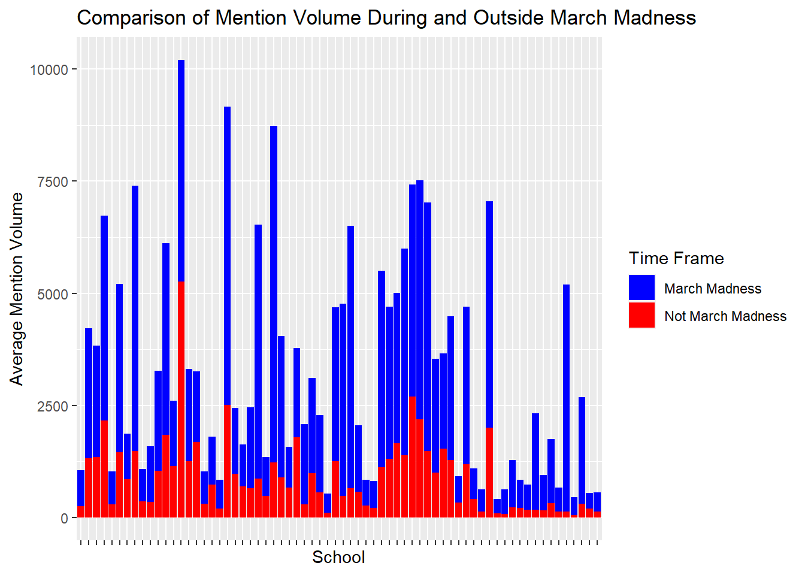
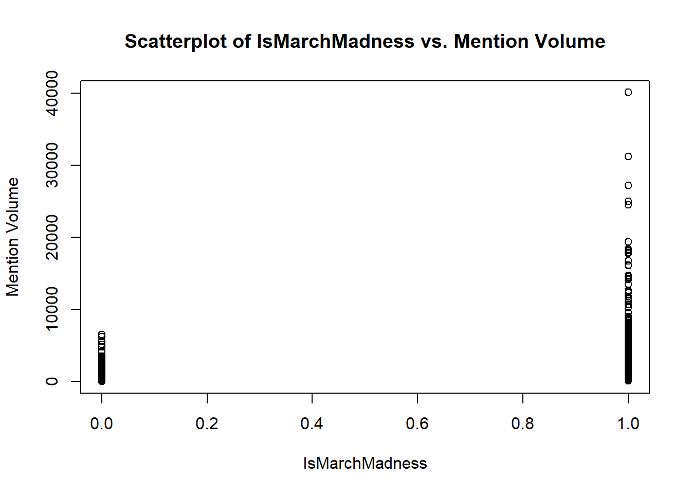
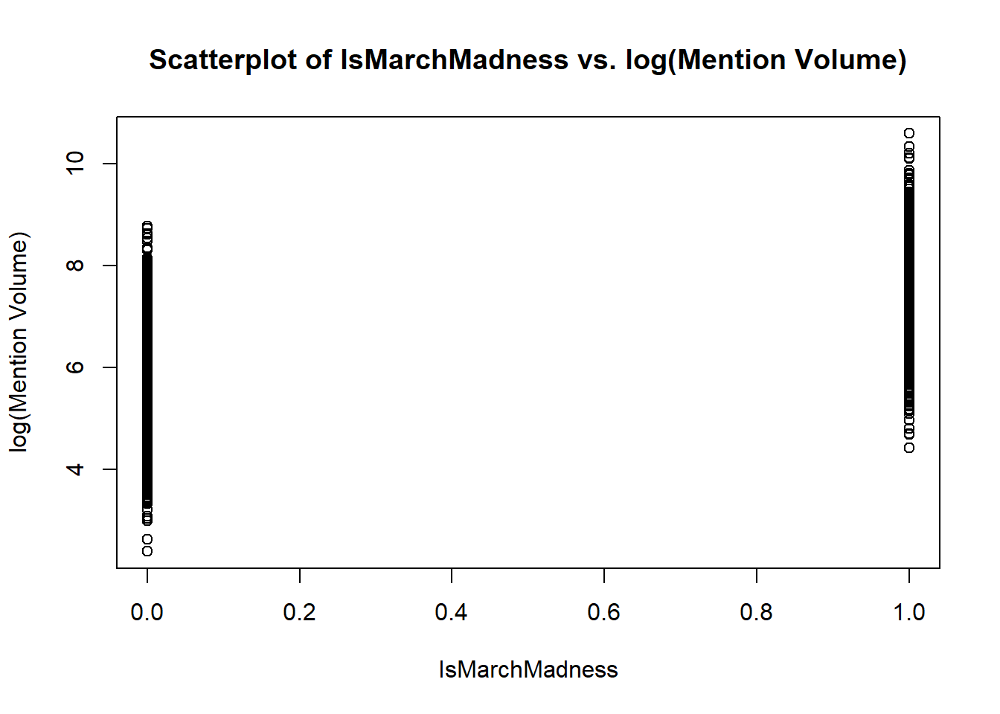
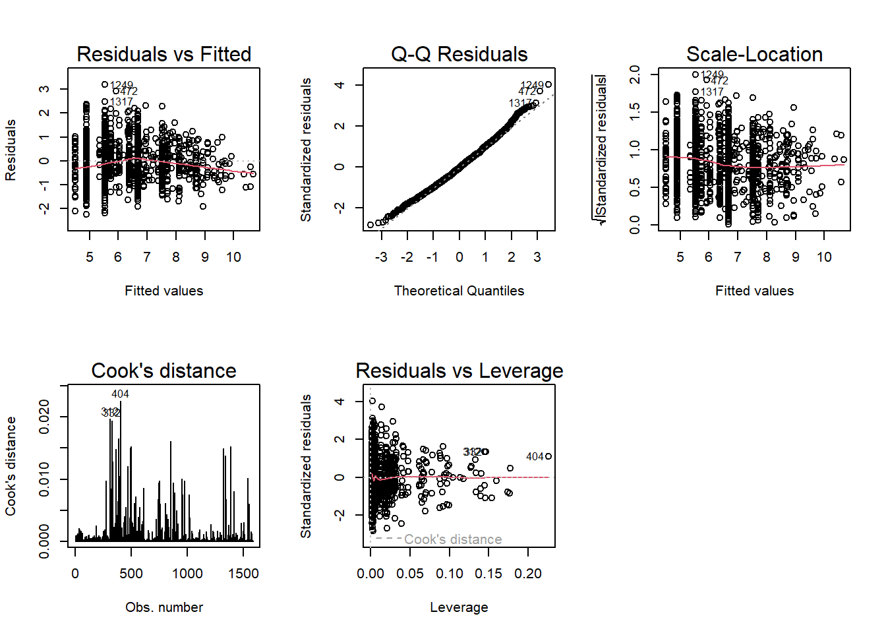

Loading required package: carData
Attaching package: 'car'
The following object is masked from 'package:dplyr':
recode
The following object is masked from 'package:purrr':
some
Code
library(forcats)library(stargazer)
Please cite as:
Hlavac, Marek (2022). stargazer: Well-Formatted Regression and Summary Statistics Tables.
R package version 5.2.3. https://CRAN.R-project.org/package=stargazer
Introduction
In April 2013, Doug J. Chung published a research paper1 endeavoring to quantify and model the impact of the so-called “Flutie Effect” - the spillover impact that athletics has on the quantity and quality of applicants to US colleges (named after Boston College quarterback Doug Flutie, who in 1984 threw a Hail Mary touchdown pass to secure victory with six seconds in a game against the University of Miami, qualifying the team to compete in the Cotton Bowl2). The legacy of Flutie’s on-field success has been credited with catalyzing a 30% increase in undergraduate applications at Boston College, though institutional officials have argued that other, non-athletic factors were the “true” reason behind the increase. This trend of increased applications after prominent athletic successes, however, has been observed at other institutions including Georgetown, Northwestern, Boise State, and Texas Christian University.
Chung was able to find a statistically significant relationship between athletic success and both the quantity (number of applications) and quality (SAT scores of those applicants) of applicants to a given institution; his findings included that when a school rises from being classified as a mediocre football program to great one, applications rise by 18.7%3.
While in my job I do not focus directly on applications to US colleges, I do work with on campus marketing and communications leaders, and generate insights from data derived from online conversation about their schools so that they can better understand that conversation in ways that can help them to develop, refine, and align their communications strategies with the goals of the institutions that they serve4. A trend I frequently observe while analyzing this online conversation data is the impact that athletics has on the volume and reach of mentions related to schools.
In benchmarking work that we’ve undertaken in order to better understand online conversation trends in higher education, we’ve found that, on average, 63% of all online conversation related to schools is about their athletics - and for some schools, this proportion can be as high as 91%5. And while the proportion of overall online conversation relating to different colleges is already quite high, there are certain significant events within the realm of college sports that send mention volume even higher. One such event is March Madness.
Run by the NCAA every year during the month of March, the men’s version of the March Madness tournament is widely regarded as one of biggest American sporting events. 68 teams participate in the three-week long single-elimination tournament, which produced $1.14 billion in annual revenue for the NCAA in 20226. One of the most exciting parts of the tournament are the “Cinderella stories”; teams with a low ranking that manage to eliminate higher ranked teams.
In 2022, I became interested in developing a greater understanding of the impact that March Madness could have on a school’s online conversation volume and began tracking that year’s Cinderella - the Saint Peter’s College Peacocks, a #15 seed that made it all the way to the Elite 8. In their Sweet 16 game against Purdue, Saint Peter’s had more mentions per minute than their average monthly volume for the prior five months. Their total mention volume during the month of March was 12,380 times more than that same monthly average7.
After completing that work, I became increasingly curious about how participation in the tournament affected conversation volume and reach for all teams, not just Cinderella stories. I wanted to investigate the factors that might influence more/less conversation volume for any given team, and indeed, whether conversation about the team was the only facet of conversation about a college that increased - or if the school as a whole received more conversation overall. I became very interested in learning more about the overall trends that relate to participation in events like March Madness and how we could use that information to provide strategic insights to colleges across the US.
Bringing it back to the Flutie Effect - if on-field athletic success can impact enrollment at US colleges, it stands to reason that online conversation about athletic success (or athletic events in general) could have a similar impact. Accordingly, it would be prudent to further explore the impact an event like the men’s March Madness tournament has on online conversation volume for US colleges.
Research Question
Specifically, the research question that I want to explore is:
How does online conversation volume differ when schools are participating in the men’s March Madness tournament?
To examine this research question in greater detail, I will also consider what variables contribute to differences in mention volume during the tournament. These variables can be broken down into three types: game outcome related, tournament related, and school related.
The answer to this question and a better understanding of the variables that contribute to differences in mention volume will provide more robust insight into the overall impact that events such as the men’s March Madness tournament have and the types of changes that can be expected based on the presence/absence of additional variables. This information can subsequently serve to inform strategies and tactics that can be implemented by marketing and communications professionals who focus on digital media in higher education. That is, schools can use this information to develop further hypotheses to be tested that would facilitate a goal of leveraging and maximizing the impact of athletic participation and success on their online conversation.
Hypothesis
My overarching hypothesis is that participation in the men’s March Madness tournament increases online conversation about the schools that are involved. I further hypothesize that the increase in conversation volume for each school will be further influenced by three types of additional mediating variables: game-outcome related variables, school-related variables, and tournament related variables.
Data Collection
The data used for this project was collected by me using the Brandwatch Consumer Research platform. I first wrote Boolean to search for mentions about all 68 schools with teams in the men’s March Madness tournament, using the same parameters to construct each one (specifically, the school’s full name, shortened name(s), acronym(s), mascot(s), website URL, athletics website URL, and Twitter usernames for the school’s flagship, flagship athletics, and men’s basketball team accounts).
The Boolean was then used to run a query within Brandwatch to pull all relevant, retrievable online mentions for the 68 schools made between January 1 and May 12 2023. This search returned 9,007,552 mentions.
One of the features included in Brandwatch is the ability to segment data into categories, and this can be done in a wide range of manners (using Boolean or a variety of pre-built parameters such as content sources and mention types). I used this feature to break the mention volume data down by school (the 68 schools participating in men’s March Madness), and daily volume (for the 132 days) and exported this information to .csv. This mention volume data provides the foundation for this analysis.
I performed a variety of data manipulation in order to create my variables of interest.
Data Manipulation For Mention Volume (Dependent Variable)
I calculated the average daily volume for the following time spans:
during the tournament (March 14 to day the after each team’s elimination)
outside of the tournament (January 1 to March 13 and the day after each team’s elimination to May 12 - ie. both before and after, but not during)
the week after the tournament for each team (the week after each team’s elimination)
two weeks after the tournament for each team (the week two weeks after each team’s elimination)
before the tournament (January 1 to March 11)
after the tournament (Two days after each team’s elimination to May 12)
I also added columns for the actual daily volume on the following days:
Day of elimination
Day after elimination
Two days after elimination
Three days after elimination
Four days after elimination
Five days after elimination
Six days after elimination
Code
# Read in dataTournamentVariables <-read_csv("_data/MMVariables.csv", show_col_types =FALSE)# Join dataMMVolumeVar <- MMVolumeNew %>%left_join(TournamentVariables, by ="School")# Calculate pre-tournament average daily volume MMVolumeVar$VolBefore <- (round(rowMeans(MMVolumeVar[, 2:73]), digits =0))# Create a function to pull the rows needed to calculate "during tournament" for each of the schoolsfun1 <-function(row) { start_col1 <-as.numeric(row[134]) # Convert the value to a numeric column index end_col1 <-as.numeric(row[135]) # Convert the value to a numeric column index values1 <-as.numeric(row[start_col1:end_col1]) # The rows to calculate the average average1 <- (round(mean(values1, na.rm =TRUE), digits =0))return(average1)}# Return the average daily volume for "during tournament" for each school MMVolumeVar$VolDuring <-apply(MMVolumeVar, 1, fun1)# Create a function to pull the rows needed to calculate "after tournament" for each of the schoolsfun2 <-function(row) { start_col2 <-as.numeric(row[136]) # Convert the value to a numeric column index end_col2 <-as.numeric(row[137]) # Convert the value to a numeric column index values2 <-as.numeric(row[start_col2:end_col2]) # The rows to calculate the average average2 <- (round(mean(values2, na.rm =TRUE), digits =0))return(average2)}# Return the average daily volume for "during tournament" for each school MMVolumeVar$VolAfter <-apply(MMVolumeVar, 1, fun2)# Create a function to pull the rows needed for post-elimination volume fun3 <-function(row) { column_index3 <-as.numeric(row[136]) # Convert the value to a numeric column index value3 <-as.numeric(row[column_index3]) # Get the value from the specified columnreturn(value3)}# Return the post-elimination day volume for each school MMVolumeVar$VolPostElim <-apply(MMVolumeVar, 1, fun3)# Create a function to pull the rows needed for non-tournament volumefun14 <-function(row) { start_col14 <-as.numeric(row[145]) # Start column index for range 1 end_col14 <-as.numeric(row[146]) # End column index for range 1 start_col14a <-as.numeric(row[147]) # Start column index for range 2 end_col14a <-as.numeric(row[148]) # End column index for range 2 values14 <-as.numeric(row[start_col14:end_col14]) # Values for range 1 values14a <-as.numeric(row[start_col14a:end_col14a]) # Values for range 2 values14b <-c(values14, values14a) # Combine the values from both ranges average14 <- (round(mean(values14b, na.rm =TRUE), digits =0))return(average14)}# Return the average non-tournament daily volume for each school MMVolumeVar$VolNonTourn <-apply(MMVolumeVar, 1, fun14) # Create a function to pull the rows needed for post-elimination +1 volume fun4 <-function(row) { column_index4 <-as.numeric(row[137]) # Convert the value to a numeric column index value4 <-as.numeric(row[column_index4]) # Get the value from the specified columnreturn(value4)}# Return the post-elimination +1 volume for each school MMVolumeVar$VolPostElim1 <-apply(MMVolumeVar, 1, fun4)# Create a function to pull the rows needed for post-elimination +2 volume fun5 <-function(row) { column_index5 <-as.numeric(row[138]) # Convert the value to a numeric column index value5 <-as.numeric(row[column_index5]) # Get the value from the specified columnreturn(value5)}# Return the post-elimination +2 volume for each school MMVolumeVar$VolPostElim2 <-apply(MMVolumeVar, 1, fun5)# Create a function to pull the rows needed for post-elimination +3 volume fun6 <-function(row) { column_index6 <-as.numeric(row[139]) # Convert the value to a numeric column index value6 <-as.numeric(row[column_index6]) # Get the value from the specified columnreturn(value6)}# Return the post-elimination +3 volume for each school MMVolumeVar$VolPostElim3 <-apply(MMVolumeVar, 1, fun6)# Create a function to pull the rows needed for post-elimination +4 volume fun17 <-function(row) { column_index17 <-as.numeric(row[140]) # Convert the value to a numeric column index value17 <-as.numeric(row[column_index17]) # Get the value from the specified columnreturn(value17)}# Return the post-elimination +4 volume for each school MMVolumeVar$VolPostElim4 <-apply(MMVolumeVar, 1, fun17)# Create a function to pull the rows needed for post-elimination +5 volume fun18 <-function(row) { column_index18 <-as.numeric(row[141]) # Convert the value to a numeric column index value18 <-as.numeric(row[column_index18]) # Get the value from the specified columnreturn(value18)}# Return the post-elimination +5 volume for each school MMVolumeVar$VolPostElim5 <-apply(MMVolumeVar, 1, fun18)# Create a function to pull the rows needed for post-elimination +6 volume fun19 <-function(row) { column_index19 <-as.numeric(row[142]) # Convert the value to a numeric column index value19 <-as.numeric(row[column_index19]) # Get the value from the specified columnreturn(value19)}# Return the post-elimination +6 volume for each school MMVolumeVar$VolPostElim6 <-apply(MMVolumeVar, 1, fun19)# Create a function to pull the rows needed for day after elimination volume fun20 <-function(row) { column_index20 <-as.numeric(row[135]) # Convert the value to a numeric column index value20 <-as.numeric(row[column_index20]) # Get the value from the specified columnreturn(value20)}# Return the day after volume for each school MMVolumeVar$VolAfterElim <-apply(MMVolumeVar, 1, fun20)# Create a function to pull the rows needed for day of elimination volume fun21 <-function(row) { column_index21 <-as.numeric(row[149]) # Convert the value to a numeric column index value21 <-as.numeric(row[column_index21]) # Get the value from the specified columnreturn(value21)}# Return the day after volume for each school MMVolumeVar$VolElim_Day <-apply(MMVolumeVar, 1, fun21)# Create a function to pull the rows needed to calculate "week after tournament" for each of the schoolsfun15 <-function(row) { start_col15 <-as.numeric(row[136]) # Convert the value to a numeric column index end_col15 <-as.numeric(row[142]) # Convert the value to a numeric column index values15 <-as.numeric(row[start_col15:end_col15]) # The rows to calculate the average average15 <- (round(mean(values15, na.rm =TRUE), digits =0))return(average15)}# Return the average daily volume for "week after tournament" for each school MMVolumeVar$VolWeekAfter <-apply(MMVolumeVar, 1, fun15)# Create a function to pull the rows needed to calculate "two weeks after tournament" for each of the schoolsfun16 <-function(row) { start_col16 <-as.numeric(row[143]) # Convert the value to a numeric column index end_col16 <-as.numeric(row[144]) # Convert the value to a numeric column index values16 <-as.numeric(row[start_col16:end_col16]) # The rows to calculate the average average16 <- (round(mean(values16, na.rm =TRUE), digits =0))return(average16)}# Return the average daily volume for "two weeks after tournament" for each school MMVolumeVar$Vol2WeeksAfter <-apply(MMVolumeVar, 1, fun16)# Specify the starting dateTournEndDate <-as.Date("2023-03-12")# Convert the existing column "Numbers" to datesMMVolumeVar$EndDate <- TournEndDate + (MMVolumeVar$During_End -72)# Create a data frame with the columns for the calculated meansMMVolAvgs <- MMVolumeVar %>%select(School, VolDuring, VolNonTourn, VolWeekAfter, Vol2WeeksAfter, VolElim_Day, VolAfterElim, VolPostElim, VolPostElim1, VolPostElim2, VolPostElim3, VolPostElim4, VolPostElim5, VolPostElim6, VolBefore, VolAfter)MMVolAvgs
# A tibble: 68 × 16
School VolDuring VolNonTourn VolWeekAfter Vol2WeeksAfter VolElim_Day
<chr> <dbl> <dbl> <dbl> <dbl> <dbl>
1 University of … 796 260 151 132 1481
2 University of … 2903 1320 1037 1113 6441
3 Arizona State … 2476 1352 1121 1199 2458
4 Duke University 4567 2162 1242 1879 8261
5 Utah State Uni… 734 297 203 236 1796
6 University of … 3762 1453 824 983 6693
7 North Carolina… 1013 861 993 561 2255
8 University of … 5907 1487 1722 1239 11182
9 Providence Col… 721 363 997 489 1829
10 Xavier Univers… 1238 354 228 170 2975
# ℹ 58 more rows
# ℹ 10 more variables: VolAfterElim <dbl>, VolPostElim <dbl>,
# VolPostElim1 <dbl>, VolPostElim2 <dbl>, VolPostElim3 <dbl>,
# VolPostElim4 <dbl>, VolPostElim5 <dbl>, VolPostElim6 <dbl>,
# VolBefore <dbl>, VolAfter <dbl>
Data Manipulation for Independent Variables
I also manipulated the data to create my tournament variables of interest.
Code
# Read in game scores, dates, etc.DateAndTeam <-read_csv("_data/MBBMMGameData.csv", show_col_types =FALSE)DateAndTeam$GameDate <-as.Date(DateAndTeam$Date, format ="%m/%d/%Y")DateAndTeam$Time <- DateAndTeam$Time <-gsub(" ET", "", DateAndTeam$Time)DateAndTeam$Time <-strptime(DateAndTeam$Time, format="%I:%M%p")DateAndTeam$Time <-format(DateAndTeam$Time, format ="%H:%M:%S")# Use GameDate to create a TournamentRound variableDateRoundTeam <- DateAndTeam %>%mutate(TournamentRound =case_when( GameDate >="2023-03-14"& GameDate <="2023-03-15"~"First 4", GameDate >="2023-03-16"& GameDate <="2023-03-17"~"Round of 64", GameDate >="2023-03-18"& GameDate <="2023-03-19"~"Round of 32", GameDate >="2023-03-23"& GameDate <="2023-03-24"~"Sweet 16", GameDate >="2023-03-25"& GameDate <="2023-03-26"~"Elite 8", GameDate =="2023-04-01"~"Final 4", GameDate =="2023-04-03"~"Championship")) %>%# Replace game start times with time categoriesmutate(Time =case_when( Time >="12:00:00"& Time <"14:14:59"~"Early Afternoon", Time >="14:15:00"& Time <"16:29:59"~"Mid Afternoon", Time >="16:30:00"& Time <"18:44:59"~"Late Afternoon", Time >="18:45:00"& Time <"20:59:59"~"Early Evening", Time >="21:00:00"& Time <"22:45:00"~"Late Evening")) %>%# Import game day volumemutate(GDayVolCol =case_when( GameDate =="2023-03-14"~74, GameDate =="2023-03-15"~75, GameDate =="2023-03-16"~76, GameDate =="2023-03-17"~77, GameDate =="2023-03-18"~78, GameDate =="2023-03-19"~79, GameDate =="2023-03-23"~83, GameDate =="2023-03-24"~84, GameDate =="2023-03-25"~85, GameDate =="2023-03-26"~86, GameDate =="2023-04-01"~92, GameDate =="2023-04-03"~94 )) %>%rename(School = Team) %>%select(School, Seed, GameDate, TournamentRound, Time, GDayVolCol, IsWinner, WinningSeed, LosingSeed)# Create a function to bring in Game Day Volume fun13 <-function(row) { school <- row["School"] # Get the school name from the row column_index <-as.numeric(row["GDayVolCol"]) # Convert the value to a numeric column index value <- MMVolumeVar[MMVolumeVar$School == school, column_index]return(as.numeric(value))}# Return the flattened game day volume for each schoolDateRoundTeam$GameDayVolume <-unlist(apply(DateRoundTeam, 1, fun13))# Create data frame with School, GameDate, Time, TournamentRound, GameDayVolume, IsWinner, WinningSeed, LosingSeedTVariables <- DateRoundTeam %>%left_join(TournamentVariables, by ="School") %>%select(School, Seed, GameDate, Time, TournamentRound, GameDayVolume, IsWinner, WinningSeed, LosingSeed)# Mutate WinningSeed and LosingSeed to create SeedDifference column TVariables <- TVariables %>%mutate(SeedDifference =ifelse(IsWinner =="Yes", WinningSeed - LosingSeed, LosingSeed - WinningSeed)) %>%# Mutate SeedDifference and Is Winner to create UpsetWin and UpsetLossmutate(UpsetWin =ifelse(IsWinner =="Yes"& SeedDifference >=5, "Yes", "No")) %>%mutate(UpsetLoss =ifelse(IsWinner =="No"& SeedDifference <=-5, "Yes", "No")) %>%# Mutate IsWinner and Winning Seed/Losing Seed to create FavoriteWin and FavoriteLossmutate(FavoriteWin =ifelse(IsWinner =="Yes"& WinningSeed > LosingSeed, "Yes", "No")) %>%mutate(FavoriteLoss =ifelse(IsWinner =="No"& WinningSeed > LosingSeed, "Yes", "No")) %>%# Mutate IsWinner and Winning Seed/Losing Seed to create UnderdogWin and UnderdogLossmutate(UnderdogWin =ifelse(IsWinner =="Yes"& WinningSeed < LosingSeed, "Yes", "No")) %>%mutate(UnderdogLoss =ifelse(IsWinner =="No"& WinningSeed < LosingSeed, "Yes", "No"))TVariables
# A tibble: 134 × 16
School Seed GameDate Time TournamentRound GameDayVolume IsWinner
<chr> <dbl> <date> <chr> <chr> <dbl> <chr>
1 Pittsburgh Uni… 11 2023-03-14 Late… First 4 4731 Yes
2 Texas A&M Corp… 16 2023-03-14 Late… First 4 521 Yes
3 Arizona State … 11 2023-03-15 Late… First 4 3967 Yes
4 Fairleigh Dick… 16 2023-03-15 Late… First 4 1669 Yes
5 Princeton Univ… 15 2023-03-16 Mid … Round of 64 9532 Yes
6 Furman Univers… 13 2023-03-16 Earl… Round of 64 8721 Yes
7 Penn State Uni… 10 2023-03-16 Late… Round of 64 3692 Yes
8 Auburn Univers… 9 2023-03-16 Earl… Round of 64 4477 Yes
9 University of … 8 2023-03-16 Late… Round of 64 5918 Yes
10 University of … 8 2023-03-16 Earl… Round of 64 10336 Yes
# ℹ 124 more rows
# ℹ 9 more variables: WinningSeed <dbl>, LosingSeed <dbl>,
# SeedDifference <dbl>, UpsetWin <chr>, UpsetLoss <chr>, FavoriteWin <chr>,
# FavoriteLoss <chr>, UnderdogWin <chr>, UnderdogLoss <chr>
Does Participation Impact Average Mention Volume?
In order to answer the question of what impact participation in the men’s March Madness tournament has on the volume of online conversation about the schools involved, it is important to first examine if March Madness does indeed have an impact on conversation volume.
Code
# Descriptive statistics for volume during the tournament and not duringMMVolAvgs %>%select(VolNonTourn, VolDuring) %>%summary()
VolNonTourn VolDuring
Min. : 51 Min. : 322.0
1st Qu.: 269 1st Qu.: 731.5
Median : 682 Median :1802.0
Mean : 908 Mean :2389.1
3rd Qu.:1312 3rd Qu.:3576.0
Max. :5269 Max. :7504.0
This seems to indicate a pretty clear difference between average volume during the tournament and average volume outside of the tournament; the mean for volume has increased from 908 mentions to 2,389 and the IQR has increased from 269-1,312 to 731-3,576
We can also display this difference visually:
Code
#Create bar chart showing difference between average mention volume during/not during March MadnessMMVolAvgs_Long <-pivot_longer(MMVolAvgs, cols =c(VolDuring, VolNonTourn), names_to ="Variable", values_to ="Volume")MMVolAvgs_Long$School <-factor(MMVolAvgs_Long$School, levels =unique(MMVolAvgs_Long$School)) ggplot(MMVolAvgs_Long, aes(x = School, y=Volume, fill = Variable)) +geom_bar(stat ="identity", position ="stack") +labs(x ="School", y ="Average Mention Volume", fill ="Time Frame") +scale_fill_manual(values =c("VolDuring"="blue", "VolNonTourn"="red"),labels =c("March Madness", "Not March Madness")) +ggtitle("Comparison of Mention Volume During and Outside March Madness") +theme(axis.text.x =element_blank())

It can also be helpful to visualize this difference in mention volume by highlighting just how large, proportionally, that difference was. Accordingly, I transformed these volume metrics into a percentage difference in in-tournament volume compared to outside-tournament volume.
We can then provide summary statistics on this proportional difference in volume during the tournament compared to not.
Min. 1st Qu. Median Mean 3rd Qu. Max.
-6.32 94.75 162.41 278.95 278.06 3800.00
Among the 68 schools, there was a mean proportional difference in average mention volume of 279% - again, this seems to indicate that participation in March Madness increases mention volume.
Overall, mention volume increased by more than 100% for 50 of the 68 schools in the men’s March Madness tournament. We can visualize the magnitude of the increase by creating groupings of schools according to how much their average volume changed during the tournament.
Out of the 68 schools that participated in March Madness, only two experienced a decrease in their average mention volume - the University of Iowa (-6.08%) and Michigan State (-6.32%). These outliers have both experienced significant non-athletic events during 2023 that have also served to increase their mention volume outside of March Madness (a screening of the contentious film “What is a Woman” at the University of Iowa and a school shooting on campus at Michigan State).
37 schools experienced an increase in their mention volume of 100-300% while 11 saw a 301-800% increase. Two schools - Furman University and Farleigh Dickinson University - experienced volume increases of over 1,000% (1,121% and 3,800% respectively.)
Testing the Hypothesis
My original hypothesis was that participation in the men’s March Madness tournament increases online conversation about the schools that are involved.
To test this hypothesis, I will perform a paired t.test on the average volume during the tournament and outside of the tournament for all of the teams involved.
Null hypothesis: Participation in the men’s March Madness tournament does not increase average mention volume for the schools that are involved.
Alternative hypothesis: Participation in the men’s March Madness tournament does increase average mention volume for the schools that are involved.
Paired t-test
data: MMVolAvgs$VolDuring and MMVolAvgs$VolNonTourn
t = 8.1765, df = 67, p-value = 1.157e-11
alternative hypothesis: true mean difference is not equal to 0
95 percent confidence interval:
1119.565 1842.700
sample estimates:
mean difference
1481.132
The observed mean difference between the paired observations was 1,481 mentions and the 95% confidence interval is 1,120-1,843. We can be 95% certain that the true mean difference lies between this range.
The magnitude of the t-value (8.18) indicates there is strong evidence against the null hypothesis. Based on the p-value (1.157e-11) we reject the null hypothesis and support the alternative hypothesis that participation in the men’s March Madness tournament does increase average mention volume for the schools that are involved.
How long does March Madness contribute to changes in online conversation volume?
I was immediately curious how long changes in conversation volume due to March Madness would be considered statistically significant, so I performed t-tests for the average volume one week and two weeks after each team’s elimination.
Code
# Compare non-tournament volume to week after and two weeks after tournament ended for each teamt.test(MMVolAvgs$Vol2WeeksAfter, MMVolAvgs$VolNonTourn, paired =TRUE)
Paired t-test
data: MMVolAvgs$Vol2WeeksAfter and MMVolAvgs$VolNonTourn
t = -2.6328, df = 67, p-value = 0.0105
alternative hypothesis: true mean difference is not equal to 0
95 percent confidence interval:
-302.18943 -41.57528
sample estimates:
mean difference
-171.8824
Paired t-test
data: MMVolAvgs$VolWeekAfter and MMVolAvgs$VolNonTourn
t = -1.2093, df = 67, p-value = 0.2308
alternative hypothesis: true mean difference is not equal to 0
95 percent confidence interval:
-225.99467 55.46526
sample estimates:
mean difference
-85.26471
Based on the p-value for both two weeks after (0.0105) and one week after (0.2308) we fail to reject the null hypothesis - participation in the men’s March Madness tournament does not increase mention volume for the schools that are involved at either one or two weeks post tournament.
I was then curious whether changes in conversation volume due to March Madness would be considered statistically significant in the days immediately following the tournament, so I performed t-tests comparing those days’ volume numbers to each school’s average non-tournament volume.
Paired t-test
data: MMVolAvgs$VolElim_Day and MMVolAvgs$VolNonTourn
t = 6.7004, df = 67, p-value = 5.187e-09
alternative hypothesis: true mean difference is not equal to 0
95 percent confidence interval:
2723.919 5035.346
sample estimates:
mean difference
3879.632
Paired t-test
data: MMVolAvgs$VolAfterElim and MMVolAvgs$VolNonTourn
t = 2.3848, df = 67, p-value = 0.01993
alternative hypothesis: true mean difference is not equal to 0
95 percent confidence interval:
230.9917 2602.8318
sample estimates:
mean difference
1416.912
Paired t-test
data: MMVolAvgs$VolPostElim and MMVolAvgs$VolNonTourn
t = -0.048907, df = 67, p-value = 0.9611
alternative hypothesis: true mean difference is not equal to 0
95 percent confidence interval:
-283.4630 269.9042
sample estimates:
mean difference
-6.779412
Paired t-test
data: MMVolAvgs$VolPostElim1 and MMVolAvgs$VolNonTourn
t = -1.4567, df = 67, p-value = 0.1499
alternative hypothesis: true mean difference is not equal to 0
95 percent confidence interval:
-334.72775 52.28657
sample estimates:
mean difference
-141.2206
Code
# Create a data frame with resultsVolTTestResults <-data.frame("Time Frame"=c("Elimination Day", "Day After Elimination", "2 Days After Elimination", "3 Days After Elimination"),t_value =c(6.7004, 2.3848, -0.048907, -1.4567),p_value =c(5.187e-09, 0.01993, 0.9611, 0.1499),Mean_Difference =c(3880, 1417, -6.8, -141))VolTTestResults$p_value <-format(VolTTestResults$p_value, scientific =FALSE)VolTTestResults
Time.Frame t_value p_value Mean_Difference
1 Elimination Day 6.700400 0.000000005187 3880.0
2 Day After Elimination 2.384800 0.019930000000 1417.0
3 2 Days After Elimination -0.048907 0.961100000000 -6.8
4 3 Days After Elimination -1.456700 0.149900000000 -141.0
Based on the p-values for Elimination Day and Day After Elimination, we can reject the null hypothesis - participation in the men’s March Madness tournament does increase mention volume on those two days.
For two days and three days post-elimination, however, the p-values (0.96 and 0.15) are higher than 0.05. For these days we fail to reject the null hypothesis - participation in the men’s March Madness tournament does not increase mention volume for the schools that are involved two and three days post-elimination.
The observed mean difference for the day of elimination and the day after elimination was 3,880 and 1,417 mentions respectively and the 95% confidence intervals were 2,724-5,035 and 231-2,603 respectively. We can be 95% certain that the true mean difference lies between this range.
To summarize: Participation in the men’s March Madness tournament does increase mention volume for schools with teams participating and does so for the days between the start of the tournament and the day after each team is eliminated.
What variables contribute to changes in mention volume during the tournament?
Having confirmed that participation in the men’s March Madness tournament does indeed increase mention volume for schools with teams participating, the next step is to determine what variables contribute to these changes in mention volume.
For the daily mention outcome variable, I created a data frame with the daily mention volume for each of the 68 schools in March Madness for the two days prior to the tournament beginning, all days in the tournament, and the day after the tournament, for a total time frame of March 12 to April 4, 2023. I then joined together the predictor variable data for each school’s daily mention volume during the tournament/on tournament game days.
Data manipulation
Code
# Read in data for enrollment SchoolNameToSchool <-read_csv("_data/SchoolNameToSchool.csv", show_col_types =FALSE) EnrollmentData <-read_csv("_data/CCIHE2021PublicData.csv", show_col_types =FALSE)SchoolEnrollmentData <- SchoolNameToSchool %>%left_join(EnrollmentData, by ="SchoolName")VolumeByDay <- MMVolumeNew %>%pivot_longer(cols =-School, names_to ="Date", values_to ="Mention_Volume") %>%arrange(Date)# Convert the Date column to the "YYYY-MM-DD" format if neededVolumeByDay$Date <-as.Date(VolumeByDay$Date, format ="%m/%d/%Y")# Join volume by school and enrollment data for each schoolVolumeAndEnrollment <- VolumeByDay %>%left_join(SchoolEnrollmentData, by =c("School"))# Narrow down to all days between March 12 and April 4MMVolumeByDay <- VolumeByDay %>%filter(Date >=as.Date("2023-03-12") & Date <=as.Date("2023-04-04"))# Remove unneeded variables from TVariablesTVariables <- TVariables %>%rename("Date"="GameDate") %>%select(-GameDayVolume, -WinningSeed, -LosingSeed)# Join volume by school and game-day variables for each schoolTVariables$Date <-as.Date(TVariables$Date)MMVolumeByDay$Date <-as.Date(MMVolumeByDay$Date)VolumeAndVariables <- MMVolumeByDay %>%left_join(TVariables, by =c("School", "Date")) %>%left_join(SchoolEnrollmentData, by =c("School"))VolumeAndVariables <- VolumeAndVariables %>%mutate(Seed =ifelse(School %in% TVariables$School, TVariables$Seed, NA))# Read in dataAddMajor <-read_csv("_data/DateRoundTeamSeedMajor.csv", show_col_types =FALSE) %>%select(School, Major)# Find matching indicesmatching_indices <-match(VolumeAndVariables$School, AddMajor$School)VolumeAndVariables$Major <-ifelse(!is.na(matching_indices), AddMajor$Major[matching_indices], NA)# Add EndDate column to VolumeAndVariablesMMVolVarJustEndDate <- MMVolumeVar %>%select(School, EndDate)VolumeAndVariables <- VolumeAndVariables %>%left_join(MMVolVarJustEndDate, by ="School")# Create column for DayAfterGameDateRoundTeam2 <- DateRoundTeam %>%rename(Date = GameDate) %>%mutate(DayAfterGame =as.Date(Date +1)) %>%select(School, Date, DayAfterGame)# Join to datasetVolumeAndVariables <- VolumeAndVariables %>%left_join(DateRoundTeam2, by =c("School", "Date")) %>%mutate(IsMarchMadness =ifelse(Date >=as.Date("2023-03-12") & Date <= EndDate, 1, 0),IsGameDay =ifelse(is.na(Time), 0, 1)) %>%mutate(NextRow =if_else(!is.na(DayAfterGame), row_number() +1, NA_integer_),IsDayAfterGame =if_else(row_number() %in% NextRow &!is.na(NextRow), 1, 0)) %>%mutate(IsDayAfterGame =replace(IsDayAfterGame, NextRow, 1),GDayOrAfter =ifelse(IsGameDay ==1| IsDayAfterGame ==1, 1, 0)) %>%ungroup() %>%mutate(IsWinner =ifelse(is.na(IsWinner), "No", IsWinner),UpsetWin =ifelse(is.na(UpsetWin), "No", UpsetWin), UpsetLoss =ifelse(is.na(UpsetLoss), "No", UpsetLoss),FavoriteWin =ifelse(is.na(FavoriteWin), "No", FavoriteWin),FavoriteLoss =ifelse(is.na(FavoriteLoss), "No", FavoriteLoss),UnderdogWin =ifelse(is.na(UnderdogWin), "No", UnderdogWin),UnderdogLoss =ifelse(is.na(UnderdogLoss), "No", UnderdogLoss),SeedDifference =abs(SeedDifference),SeedDifference =ifelse(is.na(SeedDifference), "Not March Madness", SeedDifference),TournamentRound =fct_na_value_to_level(as.factor(TournamentRound), "Not March Madness"),Time =fct_na_value_to_level(as.factor(Time), "Not March Madness"),SizeSetting =as.factor(SizeSetting),Control =as.factor(Control),Seed =ifelse(is.na(Seed), "Not March Madness", Seed)) %>%select(Date, School, Mention_Volume, Seed, Time, TournamentRound, IsWinner, SeedDifference, UpsetWin, UpsetLoss, FavoriteWin, FavoriteLoss, UnderdogWin, UnderdogLoss, SizeSetting, Control, F20Enrollment, Major, IsMarchMadness, IsGameDay, IsDayAfterGame, GDayOrAfter)VolumeAndVariables
# A tibble: 1,632 × 22
Date School Mention_Volume Seed Time TournamentRound IsWinner
<date> <chr> <dbl> <dbl> <fct> <fct> <chr>
1 2023-03-12 University of… 786 11 Not … Not March Madn… No
2 2023-03-12 University of… 1532 16 Not … Not March Madn… No
3 2023-03-12 Arizona State… 2664 11 Not … Not March Madn… No
4 2023-03-12 Duke Universi… 8882 16 Not … Not March Madn… No
5 2023-03-12 Utah State Un… 638 15 Not … Not March Madn… No
6 2023-03-12 University of… 3980 13 Not … Not March Madn… No
7 2023-03-12 North Carolin… 2181 10 Not … Not March Madn… No
8 2023-03-12 University of… 1476 9 Not … Not March Madn… No
9 2023-03-12 Providence Co… 1012 8 Not … Not March Madn… No
10 2023-03-12 Xavier Univer… 801 8 Not … Not March Madn… No
# ℹ 1,622 more rows
# ℹ 15 more variables: SeedDifference <chr>, UpsetWin <chr>, UpsetLoss <chr>,
# FavoriteWin <chr>, FavoriteLoss <chr>, UnderdogWin <chr>,
# UnderdogLoss <chr>, SizeSetting <fct>, Control <fct>, F20Enrollment <dbl>,
# Major <chr>, IsMarchMadness <dbl>, IsGameDay <dbl>, IsDayAfterGame <dbl>,
# GDayOrAfter <dbl>
Model 1 - Participation in March Madness
There is one independent variable to be considered in this section - whether the day’s mention volume is from a day when the school was not yet eliminated from the tournament (1 - Yes, 2 - No).
Code
# Run linear regression with NonTournProp and IsMarchMadnessIsMarchMadnessLR <-lm(Mention_Volume ~ IsMarchMadness, data = VolumeAndVariables)summary(IsMarchMadnessLR)
Call:
lm(formula = Mention_Volume ~ IsMarchMadness, data = VolumeAndVariables)
Residuals:
Min 1Q Median 3Q Max
-2787 -682 -428 339 37243
Coefficients:
Estimate Std. Error t value Pr(>|t|)
(Intercept) 720.54 80.47 8.954 <2e-16 ***
IsMarchMadness 2150.27 130.13 16.524 <2e-16 ***
---
Signif. codes: 0 '***' 0.001 '**' 0.01 '*' 0.05 '.' 0.1 ' ' 1
Residual standard error: 2555 on 1630 degrees of freedom
Multiple R-squared: 0.1435, Adjusted R-squared: 0.1429
F-statistic: 273 on 1 and 1630 DF, p-value: < 2.2e-16
While linear regression does indeed demonstrate a statistically significant relationship between IsMarchMadness and mention volume, a scatterplot comparing the two variables shows large cluster of values, followed by a long tail indicating outliers on the high end of mention volume.
Code
# Scatterplot of IsMarchMadness vs. (Mention_Volume)plot(VolumeAndVariables$IsMarchMadness, VolumeAndVariables$Mention_Volume, xlab ="IsMarchMadness", ylab ="Mention Volume", main ="Scatterplot of IsMarchMadness vs. Mention Volume")

Whereas if I plot IsMarchMadness against the log of Mention_Volume, this reduces the skew and makes the data more symmetric.
Code
# Scatterplot of IsMarchMadness vs. log(Mention_Volume)plot(VolumeAndVariables$IsMarchMadness, log(VolumeAndVariables$Mention_Volume), xlab ="IsMarchMadness", ylab ="log(Mention Volume)", main ="Scatterplot of IsMarchMadness vs. log(Mention Volume)")

Code
# Run linear regression with MentionVolume and log(IsMarchMadness)IsMarchMadnessLRlog <-lm(log(Mention_Volume) ~ IsMarchMadness, data = VolumeAndVariables)summary(IsMarchMadnesslog)
Error in eval(expr, envir, enclos): object 'IsMarchMadnesslog' not found
Using the log transformed dependent variable has a much higher r squared (0.2491) vs. the model using the original dependent variable (0.1395).
Accordingly, I am going to use test using the log transformed version of Mention_Volume and the original version in all of my other models.
Model 2 - Game Outcome Related Variables
Win/Loss (IsWinner - Yes, No, Not March Madness)
Did the favorite win? (FavoriteWin - Yes, No, Not March Madness)
Did the favorite lose? (FavoriteLoss - Yes, No, Not March Madness)
Did the underdog win? (UnderdogWin - Yes, No, Not March Madness)
Did underdog lose (UnderdogLose - Yes, No, Not March Madness)
Is this an upset win? (UpsetWin - Yes, No, Not March Madness)
Is this an upset loss? (UpsetLoss - Yes, No, Not March Madness)
Win/Loss
This category is relatively self-explanatory - does the result of the game (win or loss) have an impact on mention volume.
Code
# Linear regression for IsWinnersummary(lm(Mention_Volume ~ IsMarchMadness + IsWinner, data = VolumeAndVariables))
Call:
lm(formula = Mention_Volume ~ IsMarchMadness + IsWinner, data = VolumeAndVariables)
Residuals:
Min 1Q Median 3Q Max
-7435 -669 -388 391 37855
Coefficients:
Estimate Std. Error t value Pr(>|t|)
(Intercept) 720.54 72.78 9.90 <2e-16 ***
IsMarchMadness 1538.60 121.99 12.61 <2e-16 ***
IsWinnerYes 5696.69 298.79 19.07 <2e-16 ***
---
Signif. codes: 0 '***' 0.001 '**' 0.01 '*' 0.05 '.' 0.1 ' ' 1
Residual standard error: 2311 on 1629 degrees of freedom
Multiple R-squared: 0.2997, Adjusted R-squared: 0.2989
F-statistic: 348.6 on 2 and 1629 DF, p-value: < 2.2e-16
Code
summary(lm(log(Mention_Volume) ~ IsMarchMadness + IsWinner, data = VolumeAndVariables))
Call:
lm(formula = log(Mention_Volume) ~ IsMarchMadness + IsWinner,
data = VolumeAndVariables)
Residuals:
Min 1Q Median 3Q Max
-3.5531 -0.8947 0.0863 0.8877 3.3890
Coefficients:
Estimate Std. Error t value Pr(>|t|)
(Intercept) 5.95095 0.03607 164.990 <2e-16 ***
IsMarchMadness 1.25949 0.06046 20.832 <2e-16 ***
IsWinnerYes 1.41941 0.14808 9.586 <2e-16 ***
---
Signif. codes: 0 '***' 0.001 '**' 0.01 '*' 0.05 '.' 0.1 ' ' 1
Residual standard error: 1.145 on 1629 degrees of freedom
Multiple R-squared: 0.2938, Adjusted R-squared: 0.293
F-statistic: 338.9 on 2 and 1629 DF, p-value: < 2.2e-16
Winning the game is a statistically significant predictor variable.
Favorite Win/Loss
The favorite in a game is the team that has a higher seed. Here we will consider whether the favorite in the game winning, the favorite in the game losing, and both variables together had a statistically significant impact on mention volume.
Code
summary(lm(Mention_Volume ~ IsMarchMadness + FavoriteWin, data = VolumeAndVariables))
Call:
lm(formula = Mention_Volume ~ IsMarchMadness + FavoriteWin, data = VolumeAndVariables)
Residuals:
Min 1Q Median 3Q Max
-8848 -672 -410 356 37490
Coefficients:
Estimate Std. Error t value Pr(>|t|)
(Intercept) 720.54 75.78 9.508 <2e-16 ***
IsMarchMadness 1903.57 123.73 15.384 <2e-16 ***
FavoriteWinYes 8102.16 560.55 14.454 <2e-16 ***
---
Signif. codes: 0 '***' 0.001 '**' 0.01 '*' 0.05 '.' 0.1 ' ' 1
Residual standard error: 2406 on 1629 degrees of freedom
Multiple R-squared: 0.2408, Adjusted R-squared: 0.2399
F-statistic: 258.4 on 2 and 1629 DF, p-value: < 2.2e-16
Code
summary(lm(log(Mention_Volume) ~ IsMarchMadness + FavoriteWin, data = VolumeAndVariables))
Call:
lm(formula = log(Mention_Volume) ~ IsMarchMadness + FavoriteWin,
data = VolumeAndVariables)
Residuals:
Min 1Q Median 3Q Max
-3.5531 -0.9075 0.0774 0.8943 3.2894
Coefficients:
Estimate Std. Error t value Pr(>|t|)
(Intercept) 5.95095 0.03661 162.528 < 2e-16 ***
IsMarchMadness 1.35915 0.05979 22.734 < 2e-16 ***
FavoriteWinYes 1.73238 0.27085 6.396 2.08e-10 ***
---
Signif. codes: 0 '***' 0.001 '**' 0.01 '*' 0.05 '.' 0.1 ' ' 1
Residual standard error: 1.162 on 1629 degrees of freedom
Multiple R-squared: 0.2723, Adjusted R-squared: 0.2714
F-statistic: 304.7 on 2 and 1629 DF, p-value: < 2.2e-16
Code
# Linear regression for favorite winFaveWin <- (lm(Mention_Volume ~ IsMarchMadness + FavoriteWin, data = VolumeAndVariables))FaveWinlog <- (lm(log(Mention_Volume) ~ IsMarchMadness + FavoriteWin, data = VolumeAndVariables))# Linear regression for favorite lossFaveLoss <- (lm(Mention_Volume ~ IsMarchMadness + FavoriteLoss, data = VolumeAndVariables))FaveLosslog <- (lm(log(Mention_Volume) ~ IsMarchMadness + FavoriteLoss, data = VolumeAndVariables))# Linear regression for both favorite win and lossFaveWinOrLoss <- (lm(Mention_Volume ~ IsMarchMadness + FavoriteWin + FavoriteLoss, data = VolumeAndVariables))FaveWinOrLosslog <- (lm(log(Mention_Volume) ~ IsMarchMadness + FavoriteWin + FavoriteLoss, data = VolumeAndVariables))stargazer(FaveWin, FaveLoss, FaveWinOrLoss, type ="text")
Both the favorite winning and the favorite losing are statistically significant predictor variables.
Underdog Win/Loss
The favorite in a game is the team that has a lower seed. Here we will consider whether the underdog in the game winning, the underdog in the game losing, and both variables had a statistically significant impact on mention volume.
Code
# Linear regression for underdog winUnderWin <- (lm(Mention_Volume ~ IsMarchMadness + UnderdogWin, data = VolumeAndVariables))UnderWinlog <- (lm(log(Mention_Volume) ~ IsMarchMadness + UnderdogWin, data = VolumeAndVariables))# Linear regression for underdog lossUnderLoss <- (lm(Mention_Volume ~ IsMarchMadness + UnderdogLoss, data = VolumeAndVariables))UnderLosslog <- (lm(log(Mention_Volume) ~ IsMarchMadness + UnderdogLoss, data = VolumeAndVariables))# Linear regression for both underdog win and lossUnderWinAndLoss <- (lm(Mention_Volume ~ IsMarchMadness + UnderdogWin + UnderdogLoss, data = VolumeAndVariables))UnderWinAndLosslog <- (lm(log(Mention_Volume) ~ IsMarchMadness + UnderdogWin + UnderdogLoss, data = VolumeAndVariables))stargazer(UnderWin, UnderLoss, UnderWinAndLoss, type ="text")
Both the underdog winning and the underdog losing are statistically significant predictor variables. However, when I ran them together, the underdog losing had a significant impact on mention volume while the underdog winning did not.
Is Upset
A game is considered an upset when a team ranked five or more seeds lower than the team they are playing wins the game.
Code
# Add IsUpset columnVolumeAndVariables <- VolumeAndVariables %>%mutate(IsUpset =ifelse(UpsetWin =="Yes"| UpsetLoss =="Yes", "Yes", "No"))# Linear Regression for IsUpsetIsUpset <- (lm(Mention_Volume ~ IsMarchMadness + IsUpset, data = VolumeAndVariables))IsUpsetlog <- (lm(log(Mention_Volume) ~ IsMarchMadness + IsUpset, data = VolumeAndVariables))# Linear Regression for UpsetWinUpsetWin <- (lm(Mention_Volume ~ IsMarchMadness + UpsetWin, data = VolumeAndVariables))UpsetWinlog <- (lm(log(Mention_Volume) ~ IsMarchMadness + UpsetWin, data = VolumeAndVariables))# Linear Regression for UpsetLossUpsetLoss <- (lm(Mention_Volume ~ IsMarchMadness + UpsetLoss, data = VolumeAndVariables))UpsetLosslog <- (lm(log(Mention_Volume) ~ IsMarchMadness + UpsetLoss, data = VolumeAndVariables))# Linear Regression for UpsetWin and UpsetLossUpsetWinAndLoss <- (lm(Mention_Volume ~ IsMarchMadness + UpsetWin + UpsetLoss, data = VolumeAndVariables))UpsetWinAndLosslog <- (lm(log(Mention_Volume) ~ IsMarchMadness + UpsetWin + UpsetLoss, data = VolumeAndVariables))stargazer(IsUpset, UpsetWin, UpsetLoss, UpsetWinAndLoss, type ="text")
When combining all the game-related variables together, IsWinnerYes and UpsetLossYes were no longer statistically significant. IsWinnerYes had the highest p-value, so I will remove it first and run the model again.
When it comes to game outcome-related variables and Mention_Volume, UpsetWin, FavoriteWin, FavoriteLoss, UnderdogWin, and UnderdogLoss all had a statistically significant impact on March Madness mention volume.
When it comes to modeling game-related outcomes, the statistically significant variables were slightly different when using Mention_Volume vs. log(Mention_Volume); namely, in the log(Mention_Volume) version, UpsetWin was no longer a statistically significant predictor variable.
The r squared for the non-transformed version of Mention_Volume was higher (0.3658) compared to the log (0.3135), suggesting that the non-transformed Mention_Volume is a better fit for modeling.
Model 3 - Tournament Related Variables
Round of the tournament (8 - First4, RoundOf64, RoundOf32, Sweet16, Elite8, Final4, Championship, Not in Tournament)
What Seed each team was (16 - 1 through 16)
Absolute difference in seeding between teams in game (0-15)
Time slot the game was played during (5 - LateEve, EarlyEve, LateAft, MidAft, EarlyAft)
Is Game Day (Yes/No)
Tournament Round
There are seven rounds in March Madness - First Four (play-in to determine the final eight teams in the round of 64), Round of 64, Round of 32, Sweet 16, Elite 8, Final 4, and the Championship. I have an eighth category for “Not in Tournament” for teams that have been eliminated from competition.
I will create dummy variables for each round as “not in tournament” will be multicollinear with IsMarchMadness.
Code
# Make new TournamentRound columnVolumeAndVariables <- VolumeAndVariables %>%mutate(TournamentRoundNew =case_when( IsMarchMadness ==1& IsWinner =="Yes"& Date >=as.Date("2023-03-12") & Date <=as.Date("2023-03-15") ~"First 4", IsMarchMadness ==1& IsWinner =="No"& Date >=as.Date("2023-03-12") & Date <=as.Date("2023-03-16") ~"First 4", IsMarchMadness ==1& IsWinner =="Yes"& Date >=as.Date("2023-03-16") & Date <=as.Date("2023-03-17") ~"Round of 64", IsMarchMadness ==1& IsWinner =="No"& Date >=as.Date("2023-03-16") & Date <=as.Date("2023-03-18") ~"Round of 64", IsMarchMadness ==1& Date >=as.Date("2023-03-18") & Date <=as.Date("2023-03-20") ~"Round of 32", IsMarchMadness ==1& IsWinner =="Yes"& Date >=as.Date("2023-03-23") & Date <=as.Date("2023-03-24") ~"Sweet 16", IsMarchMadness ==1& IsWinner =="No"& Date >=as.Date("2023-03-23") & Date <=as.Date("2023-03-25") ~"Sweet 16", IsMarchMadness ==1& Date >=as.Date("2023-03-25") & Date <=as.Date("2023-03-27") ~"Elite 8", IsMarchMadness ==1& Date >=as.Date("2023-04-01") & Date <=as.Date("2023-04-02") ~"Final 4", IsMarchMadness ==1& Date >=as.Date("2023-04-03") & Date <=as.Date("2023-04-04") ~"Championship", IsMarchMadness ==0~"Not In Tournament"))# Create dummy variables for each roundVolumeAndVariables <- VolumeAndVariables %>%mutate(IsFirst4 =ifelse(TournamentRoundNew =="First 4", 1, 0),IsRd64 =ifelse(TournamentRoundNew =="Round of 64", 1, 0),IsRd32 =ifelse(TournamentRoundNew =="Round of 32", 1, 0),IsRd16 =ifelse(TournamentRoundNew =="Sweet 16", 1, 0),IsRd8 =ifelse(TournamentRoundNew =="Elite 8", 1, 0),IsRd4 =ifelse(TournamentRoundNew =="Final 4", 1, 0),IsChamp =ifelse(TournamentRoundNew =="Championship", 1, 0))MMDaysTournamentRound <- VolumeAndVariables %>%select(Mention_Volume, IsMarchMadness, IsFirst4, IsRd64, IsRd32, IsRd16, IsRd8, IsRd4, IsChamp)# Linear regression for tournament roundsummary(lm(Mention_Volume ~ ., data = MMDaysTournamentRound))
Call:
lm(formula = Mention_Volume ~ ., data = MMDaysTournamentRound)
Residuals:
Min 1Q Median 3Q Max
-14604.5 -640.5 -368.0 402.0 20132.5
Coefficients: (1 not defined because of singularities)
Estimate Std. Error t value Pr(>|t|)
(Intercept) 720.5 62.5 11.53 <2e-16 ***
IsMarchMadness 24136.0 994.1 24.28 <2e-16 ***
IsFirst4 -23419.2 998.3 -23.46 <2e-16 ***
IsRd64 -21908.0 1008.5 -21.72 <2e-16 ***
IsRd32 -20473.0 1022.7 -20.02 <2e-16 ***
IsRd16 -18959.4 1038.3 -18.26 <2e-16 ***
IsRd8 -16179.4 1109.2 -14.59 <2e-16 ***
IsRd4 -12657.6 1215.1 -10.42 <2e-16 ***
IsChamp NA NA NA NA
---
Signif. codes: 0 '***' 0.001 '**' 0.01 '*' 0.05 '.' 0.1 ' ' 1
Residual standard error: 1984 on 1576 degrees of freedom
(48 observations deleted due to missingness)
Multiple R-squared: 0.497, Adjusted R-squared: 0.4948
F-statistic: 222.4 on 7 and 1576 DF, p-value: < 2.2e-16
The IsChamp coefficient was not defined due to singularities; I will run linear regression again with this variable on its own, and for all of the rounds except the championship round.
Code
summary(lm(Mention_Volume ~ IsChamp, data = MMDaysTournamentRound))
Call:
lm(formula = Mention_Volume ~ IsChamp, data = MMDaysTournamentRound)
Residuals:
Min 1Q Median 3Q Max
-14604.5 -1212.7 -717.0 103.5 25757.5
Coefficients:
Estimate Std. Error t value Pr(>|t|)
(Intercept) 1460.49 63.73 22.92 <2e-16 ***
IsChamp 23396.01 1268.24 18.45 <2e-16 ***
---
Signif. codes: 0 '***' 0.001 '**' 0.01 '*' 0.05 '.' 0.1 ' ' 1
Residual standard error: 2533 on 1582 degrees of freedom
(48 observations deleted due to missingness)
Multiple R-squared: 0.177, Adjusted R-squared: 0.1765
F-statistic: 340.3 on 1 and 1582 DF, p-value: < 2.2e-16
Code
summary(lm(log(Mention_Volume) ~ IsChamp, data = MMDaysTournamentRound))
Call:
lm(formula = log(Mention_Volume) ~ IsChamp, data = MMDaysTournamentRound)
Residuals:
Min 1Q Median 3Q Max
-4.0504 -0.9348 0.1631 0.9045 3.7634
Coefficients:
Estimate Std. Error t value Pr(>|t|)
(Intercept) 6.44828 0.03405 189.394 < 2e-16 ***
IsChamp 3.54487 0.67752 5.232 1.9e-07 ***
---
Signif. codes: 0 '***' 0.001 '**' 0.01 '*' 0.05 '.' 0.1 ' ' 1
Residual standard error: 1.353 on 1582 degrees of freedom
(48 observations deleted due to missingness)
Multiple R-squared: 0.01701, Adjusted R-squared: 0.01639
F-statistic: 27.37 on 1 and 1582 DF, p-value: 1.9e-07
Code
summary(lm(Mention_Volume ~ .-IsChamp, data = MMDaysTournamentRound))
Call:
lm(formula = Mention_Volume ~ . - IsChamp, data = MMDaysTournamentRound)
Residuals:
Min 1Q Median 3Q Max
-14604.5 -640.5 -368.0 402.0 20132.5
Coefficients:
Estimate Std. Error t value Pr(>|t|)
(Intercept) 720.5 62.5 11.53 <2e-16 ***
IsMarchMadness 24136.0 994.1 24.28 <2e-16 ***
IsFirst4 -23419.2 998.3 -23.46 <2e-16 ***
IsRd64 -21908.0 1008.5 -21.72 <2e-16 ***
IsRd32 -20473.0 1022.7 -20.02 <2e-16 ***
IsRd16 -18959.4 1038.3 -18.26 <2e-16 ***
IsRd8 -16179.4 1109.2 -14.59 <2e-16 ***
IsRd4 -12657.6 1215.1 -10.42 <2e-16 ***
---
Signif. codes: 0 '***' 0.001 '**' 0.01 '*' 0.05 '.' 0.1 ' ' 1
Residual standard error: 1984 on 1576 degrees of freedom
(48 observations deleted due to missingness)
Multiple R-squared: 0.497, Adjusted R-squared: 0.4948
F-statistic: 222.4 on 7 and 1576 DF, p-value: < 2.2e-16
Code
summary(lm(log(Mention_Volume) ~ .-IsChamp, data = MMDaysTournamentRound))
Call:
lm(formula = log(Mention_Volume) ~ . - IsChamp, data = MMDaysTournamentRound)
Residuals:
Min 1Q Median 3Q Max
-3.5531 -0.8450 0.0987 0.8922 2.9509
Coefficients:
Estimate Std. Error t value Pr(>|t|)
(Intercept) 5.95095 0.03548 167.747 < 2e-16 ***
IsMarchMadness 4.04219 0.56428 7.163 1.20e-12 ***
IsFirst4 -3.12992 0.56665 -5.524 3.88e-08 ***
IsRd64 -2.46016 0.57247 -4.297 1.83e-05 ***
IsRd32 -2.03323 0.58049 -3.503 0.000474 ***
IsRd16 -1.60848 0.58937 -2.729 0.006420 **
IsRd8 -1.22641 0.62963 -1.948 0.051615 .
IsRd4 -0.75028 0.68973 -1.088 0.276855
---
Signif. codes: 0 '***' 0.001 '**' 0.01 '*' 0.05 '.' 0.1 ' ' 1
Residual standard error: 1.126 on 1576 degrees of freedom
(48 observations deleted due to missingness)
Multiple R-squared: 0.3217, Adjusted R-squared: 0.3187
F-statistic: 106.8 on 7 and 1576 DF, p-value: < 2.2e-16
Tournament round is a statistically significant predictor variable for the increase in March Madness tournament volume.
When the championship round is run separately from the other rounds, its impact is statistically significant; however, when it is run with the other rounds, it produces singularities.
Looking at the coefficients, I suspect there may be better variables to explain increases in mention volume during March Madness.
Seeding
The 68 teams in March Madness are divided into four regions, and each region’s teams are ranked 1-16 (the other four teams participate in the First Four and are additional teams ranked at either 11 or 16). There are two questions I want to answer as it relates to seeding and whether it is a predictor for conversation volume:
Does the absolute difference in seeding between the two teams in the game impact mention volume?
Does each team’s seeding impact mention volume?
Code
# Linear regression for seedingsummary(lm(Mention_Volume ~ IsMarchMadness + Seed, data = VolumeAndVariables))
Call:
lm(formula = Mention_Volume ~ IsMarchMadness + Seed, data = VolumeAndVariables)
Residuals:
Min 1Q Median 3Q Max
-2952 -766 -395 327 37209
Coefficients:
Estimate Std. Error t value Pr(>|t|)
(Intercept) 959.00 132.86 7.218 8.05e-13 ***
IsMarchMadness 2133.91 130.17 16.393 < 2e-16 ***
Seed -31.38 13.92 -2.254 0.0243 *
---
Signif. codes: 0 '***' 0.001 '**' 0.01 '*' 0.05 '.' 0.1 ' ' 1
Residual standard error: 2552 on 1629 degrees of freedom
Multiple R-squared: 0.1461, Adjusted R-squared: 0.1451
F-statistic: 139.4 on 2 and 1629 DF, p-value: < 2.2e-16
Code
summary(lm(log(Mention_Volume) ~ IsMarchMadness + Seed, data = VolumeAndVariables))
Call:
lm(formula = log(Mention_Volume) ~ IsMarchMadness + Seed, data = VolumeAndVariables)
Residuals:
Min 1Q Median 3Q Max
-3.4589 -0.9049 0.1126 0.9052 3.2083
Coefficients:
Estimate Std. Error t value Pr(>|t|)
(Intercept) 6.15053 0.06097 100.877 < 2e-16 ***
IsMarchMadness 1.39820 0.05974 23.406 < 2e-16 ***
Seed -0.02627 0.00639 -4.111 4.14e-05 ***
---
Signif. codes: 0 '***' 0.001 '**' 0.01 '*' 0.05 '.' 0.1 ' ' 1
Residual standard error: 1.171 on 1629 degrees of freedom
Multiple R-squared: 0.2616, Adjusted R-squared: 0.2607
F-statistic: 288.6 on 2 and 1629 DF, p-value: < 2.2e-16
Similar to tournament round, while Seed is statistically significant, I suspect there are likely other variables that are a better fit in terms of explaining this impact.
To measure the impact of seed difference without causing multicollinearity with IsMarchMadness, I will again create dummy variables for each possible difference in seeding.
Because no games had a seeding difference of 14, 12, 10, or 2, these will be excluded from my dummy variables.
Nearly all differences in seeding (with the exception of Is11 and Is0) had a statistically significant impact on mention volume. There are, however, likely better explanatory variables than this.
For seeding, there are two final variables I want to create and examine: the impact of a seed difference of 15 (ie. a number 1 seed playing a number 16 seed), and the impact of a seed difference greater or equal to five (ie. the difference in seeding that creates the potential for a game to be an upset).
Code
# Add new column for seed difference = 15 VolumeAndVariables <- VolumeAndVariables %>%mutate(SeedDiff15 =ifelse(SeedDifference ==15, 1, 0))# Add new column for seed difference >= 5 VolumeAndVariables <- VolumeAndVariables %>%mutate(SeedDiffMoreThan5 =ifelse(SeedDifference >=5, 1, 0))# Linear regression for seed difference = 15summary(lm(Mention_Volume ~ IsMarchMadness + SeedDiff15, data = VolumeAndVariables))
Call:
lm(formula = Mention_Volume ~ IsMarchMadness + SeedDiff15, data = VolumeAndVariables)
Residuals:
Min 1Q Median 3Q Max
-6681 -676 -424 346 37300
Coefficients:
Estimate Std. Error t value Pr(>|t|)
(Intercept) 720.5 79.9 9.018 < 2e-16 ***
IsMarchMadness 2093.1 129.7 16.135 < 2e-16 ***
SeedDiff15 4456.7 902.6 4.937 8.73e-07 ***
---
Signif. codes: 0 '***' 0.001 '**' 0.01 '*' 0.05 '.' 0.1 ' ' 1
Residual standard error: 2537 on 1629 degrees of freedom
Multiple R-squared: 0.1561, Adjusted R-squared: 0.1551
F-statistic: 150.7 on 2 and 1629 DF, p-value: < 2.2e-16
Code
summary(lm(log(Mention_Volume) ~ IsMarchMadness + SeedDiff15, data = VolumeAndVariables))
Call:
lm(formula = log(Mention_Volume) ~ IsMarchMadness + SeedDiff15,
data = VolumeAndVariables)
Residuals:
Min 1Q Median 3Q Max
-3.5531 -0.9203 0.0809 0.9121 3.2512
Coefficients:
Estimate Std. Error t value Pr(>|t|)
(Intercept) 5.95095 0.03699 160.889 < 2e-16 ***
IsMarchMadness 1.39733 0.06006 23.267 < 2e-16 ***
SeedDiff15 1.13640 0.41788 2.719 0.00661 **
---
Signif. codes: 0 '***' 0.001 '**' 0.01 '*' 0.05 '.' 0.1 ' ' 1
Residual standard error: 1.174 on 1629 degrees of freedom
Multiple R-squared: 0.2574, Adjusted R-squared: 0.2564
F-statistic: 282.3 on 2 and 1629 DF, p-value: < 2.2e-16
Games where a number one seed was playing a number 15 seed did indeed have a statistically significant impact on mention volume.
Code
summary(lm(Mention_Volume ~ IsMarchMadness + SeedDiffMoreThan5, data = VolumeAndVariables))
Call:
lm(formula = Mention_Volume ~ IsMarchMadness + SeedDiffMoreThan5,
data = VolumeAndVariables)
Residuals:
Min 1Q Median 3Q Max
-6176 -669 -383 402 37838
Coefficients:
Estimate Std. Error t value Pr(>|t|)
(Intercept) 5141.4 288.9 17.80 <2e-16 ***
IsMarchMadness 1555.1 126.9 12.26 <2e-16 ***
SeedDiffMoreThan5 -4420.9 279.0 -15.85 <2e-16 ***
---
Signif. codes: 0 '***' 0.001 '**' 0.01 '*' 0.05 '.' 0.1 ' ' 1
Residual standard error: 2379 on 1629 degrees of freedom
Multiple R-squared: 0.2579, Adjusted R-squared: 0.2569
F-statistic: 283 on 2 and 1629 DF, p-value: < 2.2e-16
Code
summary(lm(log(Mention_Volume) ~ IsMarchMadness + SeedDiffMoreThan5, data = VolumeAndVariables))
Call:
lm(formula = log(Mention_Volume) ~ IsMarchMadness + SeedDiffMoreThan5,
data = VolumeAndVariables)
Residuals:
Min 1Q Median 3Q Max
-3.5531 -0.9075 0.0933 0.9068 3.3915
Coefficients:
Estimate Std. Error t value Pr(>|t|)
(Intercept) 7.10126 0.13986 50.774 <2e-16 ***
IsMarchMadness 1.25705 0.06141 20.468 <2e-16 ***
SeedDiffMoreThan5 -1.15031 0.13507 -8.516 <2e-16 ***
---
Signif. codes: 0 '***' 0.001 '**' 0.01 '*' 0.05 '.' 0.1 ' ' 1
Residual standard error: 1.152 on 1629 degrees of freedom
Multiple R-squared: 0.2858, Adjusted R-squared: 0.2849
F-statistic: 325.9 on 2 and 1629 DF, p-value: < 2.2e-16
While a seed difference of more than five had a statistically significant result, there are likely better explanatory variables for the increase in mention volume during March Madness.
Time Slot
I have divided all the games played during the tournament into five categories based on the time that each game tipped off. start times for the March Madness games into five time slots - Early Afternoon (12:00-2:15pm), Mid Afternoon (2:15-4:30pm), Late Afternoon (4:30-6:45pm), Early Evening (6:45-9:00pm), and Late Evening (9:00-10:45pm).
I included this variable because I suspect that playing earlier in the day may have an impact on overall conversation volume.
Code
# Create dummy variables for each time slotVolumeAndVariables <- VolumeAndVariables %>%mutate(IsEarlyEvening =ifelse(Time =="Early Evening", 1, 0),IsLateAfternoon =ifelse(Time =="Late Afternoon", 1, 0),IsLateEvening =ifelse(Time =="Late Evening", 1, 0),IsMidAfternoon =ifelse(Time =="Mid Afternoon", 1, 0),IsEarlyAfternoon =ifelse(Time =="Early Afternoon", 1, 0))TimeVariables <- VolumeAndVariables %>%select(Mention_Volume, IsMarchMadness, IsEarlyEvening, IsLateAfternoon, IsLateEvening, IsMidAfternoon, IsEarlyAfternoon)# Linear regression for time of daysummary(lm(Mention_Volume ~ IsMarchMadness + ., data = TimeVariables))
Time slot had a statistically significant impact across all times.
Is Game Day
While the entire tournament takes 20 days to play, games only occur on 12 of those days. Accordingly, I want to consider the impact of game day when modeling.
In my original hypothesis testing the day after each game also had a statistically significant impact on mention volume, so I want to use that in regression as well.
Code
# Linear regression game dayIsOnGameDay <-lm(Mention_Volume ~ IsMarchMadness + IsGameDay, data = VolumeAndVariables)IsOnGameDaylog <-lm(log(Mention_Volume) ~ IsMarchMadness + IsGameDay, data = VolumeAndVariables)# Linear regression day after game IsOnDayAfterGame <-lm(Mention_Volume ~ IsMarchMadness + IsDayAfterGame, data = VolumeAndVariables)IsOnDayAfterGamelog <-lm(log(Mention_Volume) ~ IsMarchMadness + IsDayAfterGame, data = VolumeAndVariables)# Linear regression for day of and day after game IsOnBothDays <-lm(Mention_Volume ~ IsMarchMadness + GDayOrAfter, data = VolumeAndVariables)IsOnBothDayslog <-lm(log(Mention_Volume) ~ IsMarchMadness + GDayOrAfter, data = VolumeAndVariables)stargazer(IsOnGameDay, IsOnDayAfterGame, IsOnBothDays, type ="text")
Call:
lm(formula = log(Mention_Volume) ~ IsMarchMadness + IsGameDay +
IsFirst4 + IsRd64 + IsRd32 + IsRd16, data = VolumeAndVariables)
Residuals:
Min 1Q Median 3Q Max
-3.5531 -0.8271 0.0958 0.8731 3.0197
Coefficients:
Estimate Std. Error t value Pr(>|t|)
(Intercept) 5.95095 0.03487 170.671 < 2e-16 ***
IsMarchMadness 2.73125 0.21830 12.511 < 2e-16 ***
IsGameDay 0.92348 0.12063 7.656 3.33e-14 ***
IsFirst4 -1.88781 0.22226 -8.494 < 2e-16 ***
IsRd64 -1.58017 0.23238 -6.800 1.48e-11 ***
IsRd32 -1.06859 0.25091 -4.259 2.18e-05 ***
IsRd16 -0.69331 0.27009 -2.567 0.0103 *
---
Signif. codes: 0 '***' 0.001 '**' 0.01 '*' 0.05 '.' 0.1 ' ' 1
Residual standard error: 1.107 on 1577 degrees of freedom
(48 observations deleted due to missingness)
Multiple R-squared: 0.3443, Adjusted R-squared: 0.3419
F-statistic: 138 on 6 and 1577 DF, p-value: < 2.2e-16
There are far fewer variables that are considered statistically significant when using the log of Mention_Volume compared to the non-transformed version. In the log-transformed model, there are five significant variables other than IsMarchMadness; in the original model there are 20.
IsGameDay was statistically significant in the log model; it was not in the non-transformed model.
IsDayAfterGame, IsRd8, IsRd4, Is15, Is13, Is9, Is8, Is7, Is6, Is5, Is4, Is3, Is1, IsLateAfternoon, IsLateEvening, and IsMidAfternoon were statistically significant in the non-log transformed model but not the log model.
The non-log-transformed model has a much higher adjusted r squared (0.6179) than the log-transformed model (0.3419).
Model 4 - School-Related Variables
Size of school (6 variables - LargeHighRez, LargePriRez, LargePriNonRez, MedHighRez, MedPriRez, SmallHighRez
Major / mid-major (1 - Yes, 0 - No)
School Size
School size is based on how school size is defined by Carnegie Classification of Institutions of Higher Education and broken into six categories: Large (Highly Residential), Large (Primarily Residential), Large (Primarily Non-Residential), Medium (Highly Residential), Medium (Primarily Residential), Small (Highly Residential).
Code
# Linear regression for school size and settingsummary(lm(Mention_Volume ~ IsMarchMadness + SizeSetting, data = VolumeAndVariables))
SizeSetting overall had a statistically significant impact, but being a large-sized school specifically did not. Schools being small or medium had a statistically significant impact.
Accordingly, I’m curious what the impact would be with size broken down only as small, medium, and large, and with size as a binary variable for IsLarge (Yes = 1, No = 2).
Call:
lm(formula = Mention_Volume ~ IsMarchMadness + Size, data = VolumeAndVariables)
Residuals:
Min 1Q Median 3Q Max
-2956 -911 -269 286 36984
Coefficients:
Estimate Std. Error t value Pr(>|t|)
(Intercept) 1012.80 87.48 11.577 < 2e-16 ***
IsMarchMadness 2117.25 127.95 16.548 < 2e-16 ***
SizeMedium -1102.32 150.52 -7.323 3.79e-13 ***
SizeSmall -1240.40 369.52 -3.357 0.000807 ***
---
Signif. codes: 0 '***' 0.001 '**' 0.01 '*' 0.05 '.' 0.1 ' ' 1
Residual standard error: 2510 on 1628 degrees of freedom
Multiple R-squared: 0.1743, Adjusted R-squared: 0.1728
F-statistic: 114.6 on 3 and 1628 DF, p-value: < 2.2e-16
Code
summary(lm(log(Mention_Volume) ~ IsMarchMadness + Size, data = VolumeAndVariables))
Call:
lm(formula = log(Mention_Volume) ~ IsMarchMadness + Size, data = VolumeAndVariables)
Residuals:
Min 1Q Median 3Q Max
-2.9337 -0.7169 0.0555 0.7192 3.4716
Coefficients:
Estimate Std. Error t value Pr(>|t|)
(Intercept) 6.30102 0.03561 176.97 <2e-16 ***
IsMarchMadness 1.36937 0.05207 26.30 <2e-16 ***
SizeMedium -1.26971 0.06126 -20.73 <2e-16 ***
SizeSmall -1.82670 0.15039 -12.15 <2e-16 ***
---
Signif. codes: 0 '***' 0.001 '**' 0.01 '*' 0.05 '.' 0.1 ' ' 1
Residual standard error: 1.021 on 1628 degrees of freedom
Multiple R-squared: 0.4384, Adjusted R-squared: 0.4374
F-statistic: 423.7 on 3 and 1628 DF, p-value: < 2.2e-16
These results were statistically significant, but the r squared from the first models suggests a better fit.
Code
# Linear regression for IsLargesummary(lm(Mention_Volume ~ IsMarchMadness + IsLarge, data = VolumeAndVariables))
Call:
lm(formula = Mention_Volume ~ IsMarchMadness + IsLarge, data = VolumeAndVariables)
Residuals:
Min 1Q Median 3Q Max
-2957 -910 -269 271 36983
Coefficients:
Estimate Std. Error t value Pr(>|t|)
(Intercept) -106.1 132.3 -0.802 0.422
IsMarchMadness 2118.3 127.9 16.566 < 2e-16 ***
IsLarge 1118.5 143.5 7.794 1.15e-14 ***
---
Signif. codes: 0 '***' 0.001 '**' 0.01 '*' 0.05 '.' 0.1 ' ' 1
Residual standard error: 2509 on 1629 degrees of freedom
Multiple R-squared: 0.1743, Adjusted R-squared: 0.1733
F-statistic: 171.9 on 2 and 1629 DF, p-value: < 2.2e-16
Code
summary(lm(log(Mention_Volume) ~ IsMarchMadness + IsLarge, data = VolumeAndVariables))
Call:
lm(formula = log(Mention_Volume) ~ IsMarchMadness + IsLarge,
data = VolumeAndVariables)
Residuals:
Min 1Q Median 3Q Max
-2.9320 -0.7301 0.0622 0.7256 3.5342
Coefficients:
Estimate Std. Error t value Pr(>|t|)
(Intercept) 4.96422 0.05404 91.86 <2e-16 ***
IsMarchMadness 1.37379 0.05224 26.30 <2e-16 ***
IsLarge 1.33507 0.05863 22.77 <2e-16 ***
---
Signif. codes: 0 '***' 0.001 '**' 0.01 '*' 0.05 '.' 0.1 ' ' 1
Residual standard error: 1.025 on 1629 degrees of freedom
Multiple R-squared: 0.4341, Adjusted R-squared: 0.4334
F-statistic: 624.8 on 2 and 1629 DF, p-value: < 2.2e-16
IsLarge was statistically significant; the adjusted r squared (for both log and non-log models) were effectively the same (0.1675 vs. 0.168 and 0.4006 vs. 0.3969) respectively.
Status as Major or Mid-Major
While it is not an official designation by the NCAA, teams that play in particular NCAA Division 1 conferences (ACC, AAC, Big East, Big 10, Big 12, Pac-12, and SEC) are often referred to as “high major” programs, while teams that play in any other conference are referred to as “mid-major”8.
Code
# Linear regression for whether or not team is a high majorsummary(lm(Mention_Volume ~ IsMarchMadness + Major, data = VolumeAndVariables))
Call:
lm(formula = Mention_Volume ~ IsMarchMadness + Major, data = VolumeAndVariables)
Residuals:
Min 1Q Median 3Q Max
-3018 -919 -124 129 36769
Coefficients:
Estimate Std. Error t value Pr(>|t|)
(Intercept) 176.3 101.6 1.735 0.0829 .
IsMarchMadness 2115.7 127.5 16.600 <2e-16 ***
MajorYes 1053.1 124.1 8.486 <2e-16 ***
---
Signif. codes: 0 '***' 0.001 '**' 0.01 '*' 0.05 '.' 0.1 ' ' 1
Residual standard error: 2501 on 1629 degrees of freedom
Multiple R-squared: 0.1797, Adjusted R-squared: 0.1787
F-statistic: 178.5 on 2 and 1629 DF, p-value: < 2.2e-16
Code
summary(lm(log(Mention_Volume) ~ IsMarchMadness + Major, data = VolumeAndVariables))
Call:
lm(formula = log(Mention_Volume) ~ IsMarchMadness + Major, data = VolumeAndVariables)
Residuals:
Min 1Q Median 3Q Max
-2.8262 -0.6724 -0.0451 0.5702 3.6218
Coefficients:
Estimate Std. Error t value Pr(>|t|)
(Intercept) 5.22406 0.03837 136.17 <2e-16 ***
IsMarchMadness 1.36575 0.04814 28.37 <2e-16 ***
MajorYes 1.40635 0.04687 30.01 <2e-16 ***
---
Signif. codes: 0 '***' 0.001 '**' 0.01 '*' 0.05 '.' 0.1 ' ' 1
Residual standard error: 0.9445 on 1629 degrees of freedom
Multiple R-squared: 0.5196, Adjusted R-squared: 0.519
F-statistic: 880.8 on 2 and 1629 DF, p-value: < 2.2e-16
Being considered a high major school had a statistically significant impact on mention volume.
In this version of the model, the p-values are again the same for the original mention volume variable and the log-transformed one; however, the adjusted r squared for the original model is higher (0.7089 vs. 0.6621).
Model 6 - Only Significant Variables
I now want to create a model with statistically significant variables from the four models that I created. I am going to use backward elimination to create this model. I am not going to include every step of me backwardly creating this model, but will include the final model with only significant variables.
Excluding IsMarchMadess, the non-log transformed model had 20 statistically significant variables, while the log-transformed model had 13.
The non-log transformed model differed from the log-transformed model with the inclusion of the UpsetLoss, FavoriteWin, UnderdogWin, IsRd4, Is13, Is9, Is4, Is3, IsEarlyEvening, IsLateAfternoon, and IsMidAfternoon variables.
The log transformed model differed from the non-log transformed model with the inclusion of the IsWinner, FavoriteLoss, UnderdogLoss, and Size variables.
The two models once again had the same p-value (< 2.2e-16) but the non-log transformed model once again had the larger adjusted r squared (0.7038 vs. 0.6602).
Comparing the Models Using Adjusted r-squared, AIC, and BIC
I have compiled a final summary of all six non-log transformed models, and a summary for the six log-transformed models.
AllVariablesLR had the highest adjusted r-squared (0.709) while SigVariablesLR had the next highest (0.704). When it came to AIC and BIC, however, the numbers for the log-adjusted models were substantially lower - AIC was 3,787.85 to 5,166.33 for the log-adjusted models and 27,727.59 to 30,243.8 for the non-adjusted ones; BIC was similar, varying from 3,879.1 to 5,182.52 for the log-adjusted models and 27,851.04 to 30,259.99 for the non-adjusted ones.
High values of AIC and BIC suggest that the model may not be a good fit for the data and that it may be overfitting. Accordingly, while the adjusted r squared was highest for the non-log models, I believe a log-adjusted model is a better fit for the data overall. Specifically, SigVariablesLRlog - the model for all significant variables from the four categories of variables (is march madness, game outcome-related, tournament-related, and school-related) is the best fitting model, with the lowest AIC and BIC, and the highest adjusted r squared amongst the log-adjusted models.
Diagnostics
Code
par(mfrow =c(2,3))plot(SigVariablesLRlog, which =1:5)

Residuals vs. Fitted
There is a slight curve to the residuals vs. fitted. While there are some outliers, this is mostly a well behaving residuals vs. fitted plot. This suggests the model is capturing most of the relationship.
Q-Q Residuals
There is greater variability/outliers at the lower end of this plot and then points fall nearly perfectly along the line until there is again slight variability at the top end. This suggests that the residuals are largely normally distributed.
Scale-Location
In the scale-location plot, the red line should be approximately horizontal, which this is. The points also appear to be randomly scattered around the line. These two observations suggest that the residuals have a largely consistent spread across the range of fitted values.
Cook’s Distance
If I use 4/n as my threshold for Cook’s distance, this plot surpasses that threshold; however, if I use 1, then this plot does not surpass that threshold. The presence of influential observations makes sense within the research context and arguably, the higher threshold is appropriate.
Residuals vs. Leverage
There are no points outside of the lines for Cook’s distance.
Conclusion
The results for both hypotheses were statistically significant -
Participation in the men’s March Madness tournament increases online conversation about the schools that are involved
This increase in conversation volume for each school is influenced by three types of additional mediating variables: game-outcome related variables, school-related variables, and tournament related variables.
Testing of the different variables and models evidenced that there are a large number of variables and factors that can contribute to differences in conversation volume for the schools/teams involved in the tournament in a statistically significant fashion. While I believe I was able to determine many of the factors that can help to predict an increase in volume, I think this also presents a significant limitation when it comes to the utility of this research for the schools involved. When it comes to social media management strategies for the teams involved in March Madness, a model with tens of different variables is not going to be easy to use; in this sense I believe that quantitative analysis to determine the statistically significant factors followed by qualitative analysis and subsequent overarching recommendations leveraging both components would provide such groups with the best opportunities to leverage the information when moving forward.
---title: "Final Project - Impact of Men's March Madness Tournament on a School's Online Conversation Volume"author: "Darron Bunt"description: "Final Project - Darron Bunt"date: "05/25/2023"format: html: toc: true toc-depth: 3 code-fold: true code-copy: true code-tools: truecategories: - finalproject---```{r}library(tidyverse)library(ggplot2)library(dplyr)library(lubridate)library(car)library(forcats)library(stargazer)```# IntroductionIn April 2013, Doug J. Chung published a research paper[^1] endeavoring to quantify and model the impact of the so-called "Flutie Effect" - the spillover impact that athletics has on the quantity and quality of applicants to US colleges (named after Boston College quarterback Doug Flutie, who in 1984 threw a Hail Mary touchdown pass to secure victory with six seconds in a game against the University of Miami, qualifying the team to compete in the Cotton Bowl[^2]). The legacy of Flutie's on-field success has been credited with catalyzing a 30% increase in undergraduate applications at Boston College, though institutional officials have argued that other, non-athletic factors were the "true" reason behind the increase. This trend of increased applications after prominent athletic successes, however, has been observed at other institutions including Georgetown, Northwestern, Boise State, and Texas Christian University.[^1]: <https://www.hbs.edu/faculty/Pages/item.aspx?num=44778>[^2]: <https://hbswk.hbs.edu/item/diagnosing-the-flutie-effect-on-college-marketing>Chung was able to find a statistically significant relationship between athletic success and both the quantity (number of applications) and quality (SAT scores of those applicants) of applicants to a given institution; his findings included that when a school rises from being classified as a mediocre football program to great one, applications rise by 18.7%[^3]. [^3]: <https://www.forbes.com/sites/hbsworkingknowledge/2013/04/29/the-flutie-effect-how-athletic-success-boosts-college-applications/?sh=61f984206e96>While in my job I do not focus directly on applications to US colleges, I do work with on campus marketing and communications leaders, and generate insights from data derived from online conversation about their schools so that they can better understand that conversation in ways that can help them to develop, refine, and align their communications strategies with the goals of the institutions that they serve[^4]. A trend I frequently observe while analyzing this online conversation data is the impact that athletics has on the volume and reach of mentions related to schools. [^4]: <https://www.campussonar.com/campus-sonar-expertise>In benchmarking work that we've undertaken in order to better understand online conversation trends in higher education, we've found that, on average, 63% of all online conversation related to schools is about their athletics - and for some schools, this proportion can be as high as 91%[^5]. And while the proportion of overall online conversation relating to different colleges is already quite high, there are certain significant events within the realm of college sports that send mention volume even higher. One such event is March Madness.[^5]: Publication of this data is forthcoming; it will be discussed during this webinar <https://t.co/MK2fARTWb5>Run by the NCAA every year during the month of March, the men's version of the March Madness tournament is widely regarded as one of biggest American sporting events. 68 teams participate in the three-week long single-elimination tournament, which produced $1.14 billion in annual revenue for the NCAA in 2022[^6]. One of the most exciting parts of the tournament are the "Cinderella stories"; teams with a low ranking that manage to eliminate higher ranked teams. [^6]: <https://wallethub.com/blog/march-madness-statistics/11016>In 2022, I became interested in developing a greater understanding of the impact that March Madness could have on a school's online conversation volume and began tracking that year's Cinderella - the Saint Peter's College Peacocks, a #15 seed that made it all the way to the Elite 8. In their Sweet 16 game against Purdue, Saint Peter's had more mentions *per minute* than their average monthly volume for the prior five months. Their total mention volume during the month of March was *12,380 times* more than that same monthly average[^7].[^7]: <https://blog.campussonar.com/blog/leverage-the-everyday-impact-of-athletics>After completing that work, I became increasingly curious about how participation in the tournament affected conversation volume and reach for all teams, not just Cinderella stories. I wanted to investigate the factors that might influence more/less conversation volume for any given team, and indeed, whether conversation about the team was the only facet of conversation about a college that increased - or if the school as a whole received more conversation overall. I became very interested in learning more about the overall trends that relate to participation in events like March Madness and how we could use that information to provide strategic insights to colleges across the US.Bringing it back to the Flutie Effect - if on-field athletic success can impact enrollment at US colleges, it stands to reason that online conversation about athletic success (or athletic events in general) could have a similar impact. Accordingly, it would be prudent to further explore the impact an event like the men's March Madness tournament has on online conversation volume for US colleges. # Research QuestionSpecifically, the research question that I want to explore is:**How does online conversation volume differ when schools are participating in the men's March Madness tournament?** To examine this research question in greater detail, I will also consider what variables contribute to differences in mention volume during the tournament. These variables can be broken down into three types: game outcome related, tournament related, and school related. The answer to this question and a better understanding of the variables that contribute to differences in mention volume will provide more robust insight into the overall impact that events such as the men's March Madness tournament have and the types of changes that can be expected based on the presence/absence of additional variables. This information can subsequently serve to inform strategies and tactics that can be implemented by marketing and communications professionals who focus on digital media in higher education. That is, schools can use this information to develop further hypotheses to be tested that would facilitate a goal of leveraging and maximizing the impact of athletic participation and success on their online conversation. # HypothesisMy overarching hypothesis is that **participation in the men's March Madness tournament increases online conversation about the schools that are involved.** I further hypothesize that the increase in conversation volume for each school will be further influenced by three types of additional mediating variables: game-outcome related variables, school-related variables, and tournament related variables.# Data CollectionThe data used for this project was collected by me using the Brandwatch Consumer Research platform. I first wrote Boolean to search for mentions about all 68 schools with teams in the men's March Madness tournament, using the same parameters to construct each one (specifically, the school's full name, shortened name(s), acronym(s), mascot(s), website URL, athletics website URL, and Twitter usernames for the school's flagship, flagship athletics, and men's basketball team accounts). The Boolean was then used to run a query within Brandwatch to pull all relevant, retrievable online mentions for the 68 schools made between January 1 and May 12 2023. This search returned 9,007,552 mentions. One of the features included in Brandwatch is the ability to segment data into categories, and this can be done in a wide range of manners (using Boolean or a variety of pre-built parameters such as content sources and mention types). I used this feature to break the mention volume data down by school (the 68 schools participating in men's March Madness), and daily volume (for the 132 days) and exported this information to .csv. This mention volume data provides the foundation for this analysis. ```{r}MMVolumeNew <-read_csv("_data/MMVolumeByDayFullNEW.csv", show_col_types =FALSE)```# Variables of Interest I performed a variety of data manipulation in order to create my variables of interest.## Data Manipulation For Mention Volume (Dependent Variable)I calculated the average daily volume for the following time spans:* during the tournament (March 14 to day the after each team's elimination)* outside of the tournament (January 1 to March 13 and the day after each team's elimination to May 12 - ie. both before and after, but not during)* the week after the tournament for each team (the week after each team's elimination)* two weeks after the tournament for each team (the week two weeks after each team's elimination)* before the tournament (January 1 to March 11)* after the tournament (Two days after each team's elimination to May 12)I also added columns for the actual daily volume on the following days: * Day of elimination* Day after elimination* Two days after elimination* Three days after elimination* Four days after elimination* Five days after elimination* Six days after elimination```{r}# Read in dataTournamentVariables <-read_csv("_data/MMVariables.csv", show_col_types =FALSE)# Join dataMMVolumeVar <- MMVolumeNew %>%left_join(TournamentVariables, by ="School")# Calculate pre-tournament average daily volume MMVolumeVar$VolBefore <- (round(rowMeans(MMVolumeVar[, 2:73]), digits =0))# Create a function to pull the rows needed to calculate "during tournament" for each of the schoolsfun1 <-function(row) { start_col1 <-as.numeric(row[134]) # Convert the value to a numeric column index end_col1 <-as.numeric(row[135]) # Convert the value to a numeric column index values1 <-as.numeric(row[start_col1:end_col1]) # The rows to calculate the average average1 <- (round(mean(values1, na.rm =TRUE), digits =0))return(average1)}# Return the average daily volume for "during tournament" for each school MMVolumeVar$VolDuring <-apply(MMVolumeVar, 1, fun1)# Create a function to pull the rows needed to calculate "after tournament" for each of the schoolsfun2 <-function(row) { start_col2 <-as.numeric(row[136]) # Convert the value to a numeric column index end_col2 <-as.numeric(row[137]) # Convert the value to a numeric column index values2 <-as.numeric(row[start_col2:end_col2]) # The rows to calculate the average average2 <- (round(mean(values2, na.rm =TRUE), digits =0))return(average2)}# Return the average daily volume for "during tournament" for each school MMVolumeVar$VolAfter <-apply(MMVolumeVar, 1, fun2)# Create a function to pull the rows needed for post-elimination volume fun3 <-function(row) { column_index3 <-as.numeric(row[136]) # Convert the value to a numeric column index value3 <-as.numeric(row[column_index3]) # Get the value from the specified columnreturn(value3)}# Return the post-elimination day volume for each school MMVolumeVar$VolPostElim <-apply(MMVolumeVar, 1, fun3)# Create a function to pull the rows needed for non-tournament volumefun14 <-function(row) { start_col14 <-as.numeric(row[145]) # Start column index for range 1 end_col14 <-as.numeric(row[146]) # End column index for range 1 start_col14a <-as.numeric(row[147]) # Start column index for range 2 end_col14a <-as.numeric(row[148]) # End column index for range 2 values14 <-as.numeric(row[start_col14:end_col14]) # Values for range 1 values14a <-as.numeric(row[start_col14a:end_col14a]) # Values for range 2 values14b <-c(values14, values14a) # Combine the values from both ranges average14 <- (round(mean(values14b, na.rm =TRUE), digits =0))return(average14)}# Return the average non-tournament daily volume for each school MMVolumeVar$VolNonTourn <-apply(MMVolumeVar, 1, fun14) # Create a function to pull the rows needed for post-elimination +1 volume fun4 <-function(row) { column_index4 <-as.numeric(row[137]) # Convert the value to a numeric column index value4 <-as.numeric(row[column_index4]) # Get the value from the specified columnreturn(value4)}# Return the post-elimination +1 volume for each school MMVolumeVar$VolPostElim1 <-apply(MMVolumeVar, 1, fun4)# Create a function to pull the rows needed for post-elimination +2 volume fun5 <-function(row) { column_index5 <-as.numeric(row[138]) # Convert the value to a numeric column index value5 <-as.numeric(row[column_index5]) # Get the value from the specified columnreturn(value5)}# Return the post-elimination +2 volume for each school MMVolumeVar$VolPostElim2 <-apply(MMVolumeVar, 1, fun5)# Create a function to pull the rows needed for post-elimination +3 volume fun6 <-function(row) { column_index6 <-as.numeric(row[139]) # Convert the value to a numeric column index value6 <-as.numeric(row[column_index6]) # Get the value from the specified columnreturn(value6)}# Return the post-elimination +3 volume for each school MMVolumeVar$VolPostElim3 <-apply(MMVolumeVar, 1, fun6)# Create a function to pull the rows needed for post-elimination +4 volume fun17 <-function(row) { column_index17 <-as.numeric(row[140]) # Convert the value to a numeric column index value17 <-as.numeric(row[column_index17]) # Get the value from the specified columnreturn(value17)}# Return the post-elimination +4 volume for each school MMVolumeVar$VolPostElim4 <-apply(MMVolumeVar, 1, fun17)# Create a function to pull the rows needed for post-elimination +5 volume fun18 <-function(row) { column_index18 <-as.numeric(row[141]) # Convert the value to a numeric column index value18 <-as.numeric(row[column_index18]) # Get the value from the specified columnreturn(value18)}# Return the post-elimination +5 volume for each school MMVolumeVar$VolPostElim5 <-apply(MMVolumeVar, 1, fun18)# Create a function to pull the rows needed for post-elimination +6 volume fun19 <-function(row) { column_index19 <-as.numeric(row[142]) # Convert the value to a numeric column index value19 <-as.numeric(row[column_index19]) # Get the value from the specified columnreturn(value19)}# Return the post-elimination +6 volume for each school MMVolumeVar$VolPostElim6 <-apply(MMVolumeVar, 1, fun19)# Create a function to pull the rows needed for day after elimination volume fun20 <-function(row) { column_index20 <-as.numeric(row[135]) # Convert the value to a numeric column index value20 <-as.numeric(row[column_index20]) # Get the value from the specified columnreturn(value20)}# Return the day after volume for each school MMVolumeVar$VolAfterElim <-apply(MMVolumeVar, 1, fun20)# Create a function to pull the rows needed for day of elimination volume fun21 <-function(row) { column_index21 <-as.numeric(row[149]) # Convert the value to a numeric column index value21 <-as.numeric(row[column_index21]) # Get the value from the specified columnreturn(value21)}# Return the day after volume for each school MMVolumeVar$VolElim_Day <-apply(MMVolumeVar, 1, fun21)# Create a function to pull the rows needed to calculate "week after tournament" for each of the schoolsfun15 <-function(row) { start_col15 <-as.numeric(row[136]) # Convert the value to a numeric column index end_col15 <-as.numeric(row[142]) # Convert the value to a numeric column index values15 <-as.numeric(row[start_col15:end_col15]) # The rows to calculate the average average15 <- (round(mean(values15, na.rm =TRUE), digits =0))return(average15)}# Return the average daily volume for "week after tournament" for each school MMVolumeVar$VolWeekAfter <-apply(MMVolumeVar, 1, fun15)# Create a function to pull the rows needed to calculate "two weeks after tournament" for each of the schoolsfun16 <-function(row) { start_col16 <-as.numeric(row[143]) # Convert the value to a numeric column index end_col16 <-as.numeric(row[144]) # Convert the value to a numeric column index values16 <-as.numeric(row[start_col16:end_col16]) # The rows to calculate the average average16 <- (round(mean(values16, na.rm =TRUE), digits =0))return(average16)}# Return the average daily volume for "two weeks after tournament" for each school MMVolumeVar$Vol2WeeksAfter <-apply(MMVolumeVar, 1, fun16)# Specify the starting dateTournEndDate <-as.Date("2023-03-12")# Convert the existing column "Numbers" to datesMMVolumeVar$EndDate <- TournEndDate + (MMVolumeVar$During_End -72)# Create a data frame with the columns for the calculated meansMMVolAvgs <- MMVolumeVar %>%select(School, VolDuring, VolNonTourn, VolWeekAfter, Vol2WeeksAfter, VolElim_Day, VolAfterElim, VolPostElim, VolPostElim1, VolPostElim2, VolPostElim3, VolPostElim4, VolPostElim5, VolPostElim6, VolBefore, VolAfter)MMVolAvgs```## Data Manipulation for Independent VariablesI also manipulated the data to create my tournament variables of interest.```{r}# Read in game scores, dates, etc.DateAndTeam <-read_csv("_data/MBBMMGameData.csv", show_col_types =FALSE)DateAndTeam$GameDate <-as.Date(DateAndTeam$Date, format ="%m/%d/%Y")DateAndTeam$Time <- DateAndTeam$Time <-gsub(" ET", "", DateAndTeam$Time)DateAndTeam$Time <-strptime(DateAndTeam$Time, format="%I:%M%p")DateAndTeam$Time <-format(DateAndTeam$Time, format ="%H:%M:%S")# Use GameDate to create a TournamentRound variableDateRoundTeam <- DateAndTeam %>%mutate(TournamentRound =case_when( GameDate >="2023-03-14"& GameDate <="2023-03-15"~"First 4", GameDate >="2023-03-16"& GameDate <="2023-03-17"~"Round of 64", GameDate >="2023-03-18"& GameDate <="2023-03-19"~"Round of 32", GameDate >="2023-03-23"& GameDate <="2023-03-24"~"Sweet 16", GameDate >="2023-03-25"& GameDate <="2023-03-26"~"Elite 8", GameDate =="2023-04-01"~"Final 4", GameDate =="2023-04-03"~"Championship")) %>%# Replace game start times with time categoriesmutate(Time =case_when( Time >="12:00:00"& Time <"14:14:59"~"Early Afternoon", Time >="14:15:00"& Time <"16:29:59"~"Mid Afternoon", Time >="16:30:00"& Time <"18:44:59"~"Late Afternoon", Time >="18:45:00"& Time <"20:59:59"~"Early Evening", Time >="21:00:00"& Time <"22:45:00"~"Late Evening")) %>%# Import game day volumemutate(GDayVolCol =case_when( GameDate =="2023-03-14"~74, GameDate =="2023-03-15"~75, GameDate =="2023-03-16"~76, GameDate =="2023-03-17"~77, GameDate =="2023-03-18"~78, GameDate =="2023-03-19"~79, GameDate =="2023-03-23"~83, GameDate =="2023-03-24"~84, GameDate =="2023-03-25"~85, GameDate =="2023-03-26"~86, GameDate =="2023-04-01"~92, GameDate =="2023-04-03"~94 )) %>%rename(School = Team) %>%select(School, Seed, GameDate, TournamentRound, Time, GDayVolCol, IsWinner, WinningSeed, LosingSeed)# Create a function to bring in Game Day Volume fun13 <-function(row) { school <- row["School"] # Get the school name from the row column_index <-as.numeric(row["GDayVolCol"]) # Convert the value to a numeric column index value <- MMVolumeVar[MMVolumeVar$School == school, column_index]return(as.numeric(value))}# Return the flattened game day volume for each schoolDateRoundTeam$GameDayVolume <-unlist(apply(DateRoundTeam, 1, fun13))# Create data frame with School, GameDate, Time, TournamentRound, GameDayVolume, IsWinner, WinningSeed, LosingSeedTVariables <- DateRoundTeam %>%left_join(TournamentVariables, by ="School") %>%select(School, Seed, GameDate, Time, TournamentRound, GameDayVolume, IsWinner, WinningSeed, LosingSeed)# Mutate WinningSeed and LosingSeed to create SeedDifference column TVariables <- TVariables %>%mutate(SeedDifference =ifelse(IsWinner =="Yes", WinningSeed - LosingSeed, LosingSeed - WinningSeed)) %>%# Mutate SeedDifference and Is Winner to create UpsetWin and UpsetLossmutate(UpsetWin =ifelse(IsWinner =="Yes"& SeedDifference >=5, "Yes", "No")) %>%mutate(UpsetLoss =ifelse(IsWinner =="No"& SeedDifference <=-5, "Yes", "No")) %>%# Mutate IsWinner and Winning Seed/Losing Seed to create FavoriteWin and FavoriteLossmutate(FavoriteWin =ifelse(IsWinner =="Yes"& WinningSeed > LosingSeed, "Yes", "No")) %>%mutate(FavoriteLoss =ifelse(IsWinner =="No"& WinningSeed > LosingSeed, "Yes", "No")) %>%# Mutate IsWinner and Winning Seed/Losing Seed to create UnderdogWin and UnderdogLossmutate(UnderdogWin =ifelse(IsWinner =="Yes"& WinningSeed < LosingSeed, "Yes", "No")) %>%mutate(UnderdogLoss =ifelse(IsWinner =="No"& WinningSeed < LosingSeed, "Yes", "No"))TVariables```# Does Participation Impact Average Mention Volume? In order to answer the question of what impact participation in the men's March Madness tournament has on the volume of online conversation about the schools involved, it is important to first examine **if** March Madness does indeed have an impact on conversation volume. ```{r}# Descriptive statistics for volume during the tournament and not duringMMVolAvgs %>%select(VolNonTourn, VolDuring) %>%summary()```This seems to indicate a pretty clear difference between average volume during the tournament and average volume outside of the tournament; the mean for volume has increased from 908 mentions to 2,389 and the IQR has increased from 269-1,312 to 731-3,576We can also display this difference visually:```{r}#Create bar chart showing difference between average mention volume during/not during March MadnessMMVolAvgs_Long <-pivot_longer(MMVolAvgs, cols =c(VolDuring, VolNonTourn), names_to ="Variable", values_to ="Volume")MMVolAvgs_Long$School <-factor(MMVolAvgs_Long$School, levels =unique(MMVolAvgs_Long$School)) ggplot(MMVolAvgs_Long, aes(x = School, y=Volume, fill = Variable)) +geom_bar(stat ="identity", position ="stack") +labs(x ="School", y ="Average Mention Volume", fill ="Time Frame") +scale_fill_manual(values =c("VolDuring"="blue", "VolNonTourn"="red"),labels =c("March Madness", "Not March Madness")) +ggtitle("Comparison of Mention Volume During and Outside March Madness") +theme(axis.text.x =element_blank())```It can also be helpful to visualize this difference in mention volume by highlighting just how large, proportionally, that difference was. Accordingly, I transformed these volume metrics into a percentage difference in in-tournament volume compared to outside-tournament volume. We can then provide summary statistics on this proportional difference in volume during the tournament compared to not.```{r}# Calculate difference between average volume during tournament and non-tournamentMMVolDiffs <- MMVolAvgs %>%mutate(InTournamentDifference =round((((VolDuring / VolNonTourn) *100) -100), digits =2),WeekAfterDifference =round((((VolWeekAfter / VolNonTourn) *100) -100), digits =2),V2WeeksAfterDifference =round((((Vol2WeeksAfter / VolNonTourn) *100) -100), digits =2),ElimDayDifference =round(((VolElim_Day / VolNonTourn) *100), digits =2),DayAfterElimDifference =round(((VolAfterElim / VolNonTourn) *100), digits =2),DayPostElimDifference =round(((VolPostElim / VolNonTourn) *100), digits =2),ElimPlus1Difference =round(((VolPostElim1 / VolNonTourn) *100), digits =2),ElimPlus2Difference =round(((VolPostElim2 / VolNonTourn) *100), digits =2), ElimPlus3Difference =round(((VolPostElim3 / VolNonTourn) *100), digits =2),ElimPlus4Difference =round(((VolPostElim4 / VolNonTourn) *100), digits =2),ElimPlus5Difference =round(((VolPostElim5 / VolNonTourn) *100), digits =2),ElimPlus6Difference =round(((VolPostElim6 / VolNonTourn) *100), digits =2), ) %>%select(School, InTournamentDifference, WeekAfterDifference, V2WeeksAfterDifference, ElimDayDifference, DayPostElimDifference, ElimPlus1Difference, ElimPlus2Difference, ElimPlus3Difference) %>%arrange(desc(InTournamentDifference))# Descriptive statistics for the proportional difference in volume during the tournament and not summary(MMVolDiffs$InTournamentDifference)```Among the 68 schools, there was a mean proportional difference in average mention volume of 279% - again, this seems to indicate that participation in March Madness increases mention volume. Overall, mention volume increased by more than 100% for 50 of the 68 schools in the men's March Madness tournament. We can visualize the magnitude of the increase by creating groupings of schools according to how much their average volume changed during the tournament.```{r}# Use InTournamentDifference to create a percentage differenceMMVolDiffCat <- MMVolDiffs %>%mutate(InTournamentDifference =case_when( InTournamentDifference <0~"Decreased Volume", InTournamentDifference >0& InTournamentDifference <=100~"Up to 100% Increase", InTournamentDifference >=101& InTournamentDifference <=200~"100%-200% Increase", InTournamentDifference >=201& InTournamentDifference <=300~"201%-300% Increase", InTournamentDifference >=301& InTournamentDifference <=600~"301%-600% Increase", InTournamentDifference >=601& InTournamentDifference <=800~"601%-800% Increase", InTournamentDifference >801~"1000%+ Increase"))MMVolDiffCatBD <- MMVolDiffCat %>%group_by(InTournamentDifference) %>%tally() %>%arrange(factor(InTournamentDifference, levels =c("Decreased Volume", "Up to 100% Increase", "100%-200% Increase", "201%-300% Increase", "301%-600% Increase", "601%-800% Increase", "1000%+ Increase")))MMVolDiffCatBD$InTournamentDifference <-factor(MMVolDiffCatBD$InTournamentDifference, levels =c("Decreased Volume", "Up to 100% Increase", "100%-200% Increase", "201%-300% Increase", "301%-600% Increase", "601%-800% Increase", "1000%+ Increase"))ggplot(MMVolDiffCatBD, aes(x = InTournamentDifference, y=n)) +geom_bar(stat ="identity", fill ="purple") +geom_text(aes(label = n), vjust =-0.1) +labs(x ="", y ="Number of Schools") +ggtitle("Number of Schools w/Each Grouping of % Increase/Decrease") +theme(axis.text.x =element_text(angle =45, hjust =1))```Out of the 68 schools that participated in March Madness, only two experienced a decrease in their average mention volume - the University of Iowa (-6.08%) and Michigan State (-6.32%). These outliers have both experienced significant non-athletic events during 2023 that have also served to increase their mention volume outside of March Madness (a screening of the contentious film "What is a Woman" at the University of Iowa and a school shooting on campus at Michigan State). 37 schools experienced an increase in their mention volume of 100-300% while 11 saw a 301-800% increase. Two schools - Furman University and Farleigh Dickinson University - experienced volume increases of over 1,000% (1,121% and 3,800% respectively.)#### Testing the HypothesisMy original hypothesis was that **participation in the men's March Madness tournament increases online conversation about the schools that are involved.**To test this hypothesis, I will perform a paired t.test on the average volume during the tournament and outside of the tournament for all of the teams involved.* Null hypothesis: Participation in the men's March Madness tournament **does not** increase average mention volume for the schools that are involved.* Alternative hypothesis: Participation in the men's March Madness tournament **does ** increase average mention volume for the schools that are involved.```{r}t.test(MMVolAvgs$VolDuring, MMVolAvgs$VolNonTourn, paired =TRUE)```The observed mean difference between the paired observations was 1,481 mentions and the 95% confidence interval is 1,120-1,843. We can be 95% certain that the true mean difference lies between this range. The magnitude of the t-value (8.18) indicates there is strong evidence against the null hypothesis. Based on the p-value (1.157e-11) we reject the null hypothesis and support the alternative hypothesis that participation in the men's March Madness tournament **does ** increase average mention volume for the schools that are involved. #### How long does March Madness contribute to changes in online conversation volume?I was immediately curious how long changes in conversation volume due to March Madness would be considered statistically significant, so I performed t-tests for the average volume one week and two weeks after each team's elimination.```{r}# Compare non-tournament volume to week after and two weeks after tournament ended for each teamt.test(MMVolAvgs$Vol2WeeksAfter, MMVolAvgs$VolNonTourn, paired =TRUE)t.test(MMVolAvgs$VolWeekAfter, MMVolAvgs$VolNonTourn, paired =TRUE)```Based on the p-value for both two weeks after (0.0105) and one week after (0.2308) we fail to reject the null hypothesis - participation in the men's March Madness tournament **does not** increase mention volume for the schools that are involved at either one or two weeks post tournament.I was then curious whether changes in conversation volume due to March Madness would be considered statistically significant in the days immediately following the tournament, so I performed t-tests comparing those days' volume numbers to each school's average non-tournament volume. ```{r}t.test(MMVolAvgs$VolElim_Day, MMVolAvgs$VolNonTourn, paired =TRUE)t.test(MMVolAvgs$VolAfterElim, MMVolAvgs$VolNonTourn, paired =TRUE)t.test(MMVolAvgs$VolPostElim, MMVolAvgs$VolNonTourn, paired =TRUE)t.test(MMVolAvgs$VolPostElim1, MMVolAvgs$VolNonTourn, paired =TRUE)``````{r}# Create a data frame with resultsVolTTestResults <-data.frame("Time Frame"=c("Elimination Day", "Day After Elimination", "2 Days After Elimination", "3 Days After Elimination"),t_value =c(6.7004, 2.3848, -0.048907, -1.4567),p_value =c(5.187e-09, 0.01993, 0.9611, 0.1499),Mean_Difference =c(3880, 1417, -6.8, -141))VolTTestResults$p_value <-format(VolTTestResults$p_value, scientific =FALSE)VolTTestResults```Based on the p-values for Elimination Day and Day After Elimination, we can reject the null hypothesis - participation in the men's March Madness tournament **does** increase mention volume on those two days. For two days and three days post-elimination, however, the p-values (0.96 and 0.15) are higher than 0.05. For these days we fail to reject the null hypothesis - participation in the men's March Madness tournament **does not** increase mention volume for the schools that are involved two and three days post-elimination.The observed mean difference for the day of elimination and the day after elimination was 3,880 and 1,417 mentions respectively and the 95% confidence intervals were 2,724-5,035 and 231-2,603 respectively. We can be 95% certain that the true mean difference lies between this range. To summarize: Participation in the men's March Madness tournament **does** increase mention volume for schools with teams participating and does so for **the days between the start of the tournament and the day after each team is eliminated**. # What variables contribute to changes in mention volume during the tournament?Having confirmed that participation in the men's March Madness tournament does indeed increase mention volume for schools with teams participating, the next step is to determine what variables contribute to these changes in mention volume. For the daily mention outcome variable, I created a data frame with the daily mention volume for each of the 68 schools in March Madness for the two days prior to the tournament beginning, all days in the tournament, and the day after the tournament, for a total time frame of March 12 to April 4, 2023. I then joined together the predictor variable data for each school's daily mention volume during the tournament/on tournament game days. ## Data manipulation```{r}# Read in data for enrollment SchoolNameToSchool <-read_csv("_data/SchoolNameToSchool.csv", show_col_types =FALSE) EnrollmentData <-read_csv("_data/CCIHE2021PublicData.csv", show_col_types =FALSE)SchoolEnrollmentData <- SchoolNameToSchool %>%left_join(EnrollmentData, by ="SchoolName")VolumeByDay <- MMVolumeNew %>%pivot_longer(cols =-School, names_to ="Date", values_to ="Mention_Volume") %>%arrange(Date)# Convert the Date column to the "YYYY-MM-DD" format if neededVolumeByDay$Date <-as.Date(VolumeByDay$Date, format ="%m/%d/%Y")# Join volume by school and enrollment data for each schoolVolumeAndEnrollment <- VolumeByDay %>%left_join(SchoolEnrollmentData, by =c("School"))# Narrow down to all days between March 12 and April 4MMVolumeByDay <- VolumeByDay %>%filter(Date >=as.Date("2023-03-12") & Date <=as.Date("2023-04-04"))# Remove unneeded variables from TVariablesTVariables <- TVariables %>%rename("Date"="GameDate") %>%select(-GameDayVolume, -WinningSeed, -LosingSeed)# Join volume by school and game-day variables for each schoolTVariables$Date <-as.Date(TVariables$Date)MMVolumeByDay$Date <-as.Date(MMVolumeByDay$Date)VolumeAndVariables <- MMVolumeByDay %>%left_join(TVariables, by =c("School", "Date")) %>%left_join(SchoolEnrollmentData, by =c("School"))VolumeAndVariables <- VolumeAndVariables %>%mutate(Seed =ifelse(School %in% TVariables$School, TVariables$Seed, NA))# Read in dataAddMajor <-read_csv("_data/DateRoundTeamSeedMajor.csv", show_col_types =FALSE) %>%select(School, Major)# Find matching indicesmatching_indices <-match(VolumeAndVariables$School, AddMajor$School)VolumeAndVariables$Major <-ifelse(!is.na(matching_indices), AddMajor$Major[matching_indices], NA)# Add EndDate column to VolumeAndVariablesMMVolVarJustEndDate <- MMVolumeVar %>%select(School, EndDate)VolumeAndVariables <- VolumeAndVariables %>%left_join(MMVolVarJustEndDate, by ="School")# Create column for DayAfterGameDateRoundTeam2 <- DateRoundTeam %>%rename(Date = GameDate) %>%mutate(DayAfterGame =as.Date(Date +1)) %>%select(School, Date, DayAfterGame)# Join to datasetVolumeAndVariables <- VolumeAndVariables %>%left_join(DateRoundTeam2, by =c("School", "Date")) %>%mutate(IsMarchMadness =ifelse(Date >=as.Date("2023-03-12") & Date <= EndDate, 1, 0),IsGameDay =ifelse(is.na(Time), 0, 1)) %>%mutate(NextRow =if_else(!is.na(DayAfterGame), row_number() +1, NA_integer_),IsDayAfterGame =if_else(row_number() %in% NextRow &!is.na(NextRow), 1, 0)) %>%mutate(IsDayAfterGame =replace(IsDayAfterGame, NextRow, 1),GDayOrAfter =ifelse(IsGameDay ==1| IsDayAfterGame ==1, 1, 0)) %>%ungroup() %>%mutate(IsWinner =ifelse(is.na(IsWinner), "No", IsWinner),UpsetWin =ifelse(is.na(UpsetWin), "No", UpsetWin), UpsetLoss =ifelse(is.na(UpsetLoss), "No", UpsetLoss),FavoriteWin =ifelse(is.na(FavoriteWin), "No", FavoriteWin),FavoriteLoss =ifelse(is.na(FavoriteLoss), "No", FavoriteLoss),UnderdogWin =ifelse(is.na(UnderdogWin), "No", UnderdogWin),UnderdogLoss =ifelse(is.na(UnderdogLoss), "No", UnderdogLoss),SeedDifference =abs(SeedDifference),SeedDifference =ifelse(is.na(SeedDifference), "Not March Madness", SeedDifference),TournamentRound =fct_na_value_to_level(as.factor(TournamentRound), "Not March Madness"),Time =fct_na_value_to_level(as.factor(Time), "Not March Madness"),SizeSetting =as.factor(SizeSetting),Control =as.factor(Control),Seed =ifelse(is.na(Seed), "Not March Madness", Seed)) %>%select(Date, School, Mention_Volume, Seed, Time, TournamentRound, IsWinner, SeedDifference, UpsetWin, UpsetLoss, FavoriteWin, FavoriteLoss, UnderdogWin, UnderdogLoss, SizeSetting, Control, F20Enrollment, Major, IsMarchMadness, IsGameDay, IsDayAfterGame, GDayOrAfter)VolumeAndVariables```## Model 1 - Participation in March Madness There is one independent variable to be considered in this section - whether the day's mention volume is from a day when the school was not yet eliminated from the tournament (1 - Yes, 2 - No). ```{r}# Run linear regression with NonTournProp and IsMarchMadnessIsMarchMadnessLR <-lm(Mention_Volume ~ IsMarchMadness, data = VolumeAndVariables)summary(IsMarchMadnessLR)```While linear regression does indeed demonstrate a statistically significant relationship between IsMarchMadness and mention volume, a scatterplot comparing the two variables shows large cluster of values, followed by a long tail indicating outliers on the high end of mention volume.```{r}# Scatterplot of IsMarchMadness vs. (Mention_Volume)plot(VolumeAndVariables$IsMarchMadness, VolumeAndVariables$Mention_Volume, xlab ="IsMarchMadness", ylab ="Mention Volume", main ="Scatterplot of IsMarchMadness vs. Mention Volume")```Whereas if I plot IsMarchMadness against the log of Mention_Volume, this reduces the skew and makes the data more symmetric.```{r}# Scatterplot of IsMarchMadness vs. log(Mention_Volume)plot(VolumeAndVariables$IsMarchMadness, log(VolumeAndVariables$Mention_Volume), xlab ="IsMarchMadness", ylab ="log(Mention Volume)", main ="Scatterplot of IsMarchMadness vs. log(Mention Volume)") ``````{r}# Run linear regression with MentionVolume and log(IsMarchMadness)IsMarchMadnessLRlog <-lm(log(Mention_Volume) ~ IsMarchMadness, data = VolumeAndVariables)summary(IsMarchMadnesslog)```Using the log transformed dependent variable has a much higher r squared (0.2491) vs. the model using the original dependent variable (0.1395). Accordingly, I am going to use test using the log transformed version of Mention_Volume and the original version in all of my other models. ## Model 2 - Game Outcome Related Variables* Win/Loss (IsWinner - Yes, No, Not March Madness)* Did the favorite win? (FavoriteWin - Yes, No, Not March Madness)* Did the favorite lose? (FavoriteLoss - Yes, No, Not March Madness)* Did the underdog win? (UnderdogWin - Yes, No, Not March Madness)* Did underdog lose (UnderdogLose - Yes, No, Not March Madness)* Is this an upset win? (UpsetWin - Yes, No, Not March Madness)* Is this an upset loss? (UpsetLoss - Yes, No, Not March Madness)### Win/LossThis category is relatively self-explanatory - does the result of the game (win or loss) have an impact on mention volume.```{r}# Linear regression for IsWinnersummary(lm(Mention_Volume ~ IsMarchMadness + IsWinner, data = VolumeAndVariables))summary(lm(log(Mention_Volume) ~ IsMarchMadness + IsWinner, data = VolumeAndVariables))```Winning the game **is** a statistically significant predictor variable.### Favorite Win/LossThe favorite in a game is the team that has a higher seed. Here we will consider whether the favorite in the game winning, the favorite in the game losing, and both variables together had a statistically significant impact on mention volume.```{r}summary(lm(Mention_Volume ~ IsMarchMadness + FavoriteWin, data = VolumeAndVariables))summary(lm(log(Mention_Volume) ~ IsMarchMadness + FavoriteWin, data = VolumeAndVariables))``````{r}# Linear regression for favorite winFaveWin <- (lm(Mention_Volume ~ IsMarchMadness + FavoriteWin, data = VolumeAndVariables))FaveWinlog <- (lm(log(Mention_Volume) ~ IsMarchMadness + FavoriteWin, data = VolumeAndVariables))# Linear regression for favorite lossFaveLoss <- (lm(Mention_Volume ~ IsMarchMadness + FavoriteLoss, data = VolumeAndVariables))FaveLosslog <- (lm(log(Mention_Volume) ~ IsMarchMadness + FavoriteLoss, data = VolumeAndVariables))# Linear regression for both favorite win and lossFaveWinOrLoss <- (lm(Mention_Volume ~ IsMarchMadness + FavoriteWin + FavoriteLoss, data = VolumeAndVariables))FaveWinOrLosslog <- (lm(log(Mention_Volume) ~ IsMarchMadness + FavoriteWin + FavoriteLoss, data = VolumeAndVariables))stargazer(FaveWin, FaveLoss, FaveWinOrLoss, type ="text")stargazer(FaveWinlog, FaveLosslog, FaveWinOrLosslog, type ="text")```Both the favorite winning and the favorite losing **are** statistically significant predictor variables.### Underdog Win/LossThe favorite in a game is the team that has a lower seed. Here we will consider whether the underdog in the game winning, the underdog in the game losing, and both variables had a statistically significant impact on mention volume.```{r}# Linear regression for underdog winUnderWin <- (lm(Mention_Volume ~ IsMarchMadness + UnderdogWin, data = VolumeAndVariables))UnderWinlog <- (lm(log(Mention_Volume) ~ IsMarchMadness + UnderdogWin, data = VolumeAndVariables))# Linear regression for underdog lossUnderLoss <- (lm(Mention_Volume ~ IsMarchMadness + UnderdogLoss, data = VolumeAndVariables))UnderLosslog <- (lm(log(Mention_Volume) ~ IsMarchMadness + UnderdogLoss, data = VolumeAndVariables))# Linear regression for both underdog win and lossUnderWinAndLoss <- (lm(Mention_Volume ~ IsMarchMadness + UnderdogWin + UnderdogLoss, data = VolumeAndVariables))UnderWinAndLosslog <- (lm(log(Mention_Volume) ~ IsMarchMadness + UnderdogWin + UnderdogLoss, data = VolumeAndVariables))stargazer(UnderWin, UnderLoss, UnderWinAndLoss, type ="text")stargazer(UnderWinlog, UnderLosslog, UnderWinAndLosslog, type ="text")```Both the underdog winning and the underdog losing **are** statistically significant predictor variables. However, when I ran them together, the underdog losing had a significant impact on mention volume while the underdog winning did not.### Is Upset A game is considered an upset when a team ranked five or more seeds lower than the team they are playing wins the game. ```{r}# Add IsUpset columnVolumeAndVariables <- VolumeAndVariables %>%mutate(IsUpset =ifelse(UpsetWin =="Yes"| UpsetLoss =="Yes", "Yes", "No"))# Linear Regression for IsUpsetIsUpset <- (lm(Mention_Volume ~ IsMarchMadness + IsUpset, data = VolumeAndVariables))IsUpsetlog <- (lm(log(Mention_Volume) ~ IsMarchMadness + IsUpset, data = VolumeAndVariables))# Linear Regression for UpsetWinUpsetWin <- (lm(Mention_Volume ~ IsMarchMadness + UpsetWin, data = VolumeAndVariables))UpsetWinlog <- (lm(log(Mention_Volume) ~ IsMarchMadness + UpsetWin, data = VolumeAndVariables))# Linear Regression for UpsetLossUpsetLoss <- (lm(Mention_Volume ~ IsMarchMadness + UpsetLoss, data = VolumeAndVariables))UpsetLosslog <- (lm(log(Mention_Volume) ~ IsMarchMadness + UpsetLoss, data = VolumeAndVariables))# Linear Regression for UpsetWin and UpsetLossUpsetWinAndLoss <- (lm(Mention_Volume ~ IsMarchMadness + UpsetWin + UpsetLoss, data = VolumeAndVariables))UpsetWinAndLosslog <- (lm(log(Mention_Volume) ~ IsMarchMadness + UpsetWin + UpsetLoss, data = VolumeAndVariables))stargazer(IsUpset, UpsetWin, UpsetLoss, UpsetWinAndLoss, type ="text")stargazer(IsUpsetlog, UpsetWinlog, UpsetLosslog, UpsetWinAndLosslog, type ="text")```Both the an upset win and an upset loss **are** statistically significant predictor variables.### Testing All of the Game Outcome-Related Variables TogetherI will test the game outcome-related variables together using both the Mention_Volume predictor variable and the log transformed version. ```{r}summary(lm(Mention_Volume ~ IsMarchMadness + IsWinner + UpsetWin + UpsetLoss + FavoriteWin + FavoriteLoss + UnderdogWin + UnderdogLoss, data = VolumeAndVariables))```When combining all the game-related variables together, IsWinnerYes and UpsetLossYes were no longer statistically significant. IsWinnerYes had the highest p-value, so I will remove it first and run the model again. ```{r}summary(lm(Mention_Volume ~ IsMarchMadness + UpsetWin + UpsetLoss + FavoriteWin + FavoriteLoss + UnderdogWin + UnderdogLoss, data = VolumeAndVariables))```UpsetLoss is still not statistically significant, so I will run the model again without it.```{r}GameOutcomeLR <-lm(Mention_Volume ~ IsMarchMadness + UpsetWin + FavoriteWin + FavoriteLoss + UnderdogWin + UnderdogLoss, data = VolumeAndVariables)summary(GameOutcomeLR)```When it comes to game outcome-related variables and Mention_Volume, UpsetWin, FavoriteWin, FavoriteLoss, UnderdogWin, and UnderdogLoss all had a statistically significant impact on March Madness mention volume.```{r}# For log(Mention_Volume)summary(lm(log(Mention_Volume) ~ IsMarchMadness + IsWinner + UpsetWin + UpsetLoss + FavoriteWin + FavoriteLoss + UnderdogWin + UnderdogLoss, data = VolumeAndVariables))``````{r}# For log(Mention_Volume)GameOutcomeLRlog <-lm(log(Mention_Volume) ~ IsMarchMadness + FavoriteWin + FavoriteLoss + UnderdogWin + UnderdogLoss, data = VolumeAndVariables)summary(GameOutcomeLRlog)```When it comes to modeling game-related outcomes, the statistically significant variables were slightly different when using Mention_Volume vs. log(Mention_Volume); namely, in the log(Mention_Volume) version, UpsetWin was no longer a statistically significant predictor variable. The r squared for the non-transformed version of Mention_Volume was higher (0.3658) compared to the log (0.3135), suggesting that the non-transformed Mention_Volume is a better fit for modeling.## Model 3 - Tournament Related Variables* Round of the tournament (8 - First4, RoundOf64, RoundOf32, Sweet16, Elite8, Final4, Championship, Not in Tournament)* What Seed each team was (16 - 1 through 16) + Absolute difference in seeding between teams in game (0-15)* Time slot the game was played during (5 - LateEve, EarlyEve, LateAft, MidAft, EarlyAft)* Is Game Day (Yes/No)### Tournament RoundThere are seven rounds in March Madness - First Four (play-in to determine the final eight teams in the round of 64), Round of 64, Round of 32, Sweet 16, Elite 8, Final 4, and the Championship. I have an eighth category for "Not in Tournament" for teams that have been eliminated from competition. I will create dummy variables for each round as "not in tournament" will be multicollinear with IsMarchMadness.```{r}# Make new TournamentRound columnVolumeAndVariables <- VolumeAndVariables %>%mutate(TournamentRoundNew =case_when( IsMarchMadness ==1& IsWinner =="Yes"& Date >=as.Date("2023-03-12") & Date <=as.Date("2023-03-15") ~"First 4", IsMarchMadness ==1& IsWinner =="No"& Date >=as.Date("2023-03-12") & Date <=as.Date("2023-03-16") ~"First 4", IsMarchMadness ==1& IsWinner =="Yes"& Date >=as.Date("2023-03-16") & Date <=as.Date("2023-03-17") ~"Round of 64", IsMarchMadness ==1& IsWinner =="No"& Date >=as.Date("2023-03-16") & Date <=as.Date("2023-03-18") ~"Round of 64", IsMarchMadness ==1& Date >=as.Date("2023-03-18") & Date <=as.Date("2023-03-20") ~"Round of 32", IsMarchMadness ==1& IsWinner =="Yes"& Date >=as.Date("2023-03-23") & Date <=as.Date("2023-03-24") ~"Sweet 16", IsMarchMadness ==1& IsWinner =="No"& Date >=as.Date("2023-03-23") & Date <=as.Date("2023-03-25") ~"Sweet 16", IsMarchMadness ==1& Date >=as.Date("2023-03-25") & Date <=as.Date("2023-03-27") ~"Elite 8", IsMarchMadness ==1& Date >=as.Date("2023-04-01") & Date <=as.Date("2023-04-02") ~"Final 4", IsMarchMadness ==1& Date >=as.Date("2023-04-03") & Date <=as.Date("2023-04-04") ~"Championship", IsMarchMadness ==0~"Not In Tournament"))# Create dummy variables for each roundVolumeAndVariables <- VolumeAndVariables %>%mutate(IsFirst4 =ifelse(TournamentRoundNew =="First 4", 1, 0),IsRd64 =ifelse(TournamentRoundNew =="Round of 64", 1, 0),IsRd32 =ifelse(TournamentRoundNew =="Round of 32", 1, 0),IsRd16 =ifelse(TournamentRoundNew =="Sweet 16", 1, 0),IsRd8 =ifelse(TournamentRoundNew =="Elite 8", 1, 0),IsRd4 =ifelse(TournamentRoundNew =="Final 4", 1, 0),IsChamp =ifelse(TournamentRoundNew =="Championship", 1, 0))MMDaysTournamentRound <- VolumeAndVariables %>%select(Mention_Volume, IsMarchMadness, IsFirst4, IsRd64, IsRd32, IsRd16, IsRd8, IsRd4, IsChamp)# Linear regression for tournament roundsummary(lm(Mention_Volume ~ ., data = MMDaysTournamentRound))```The IsChamp coefficient was not defined due to singularities; I will run linear regression again with this variable on its own, and for all of the rounds except the championship round. ```{r}summary(lm(Mention_Volume ~ IsChamp, data = MMDaysTournamentRound))summary(lm(log(Mention_Volume) ~ IsChamp, data = MMDaysTournamentRound))summary(lm(Mention_Volume ~ .-IsChamp, data = MMDaysTournamentRound))summary(lm(log(Mention_Volume) ~ .-IsChamp, data = MMDaysTournamentRound))```Tournament round **is** a statistically significant predictor variable for the increase in March Madness tournament volume. When the championship round is run separately from the other rounds, its impact is statistically significant; however, when it is run with the other rounds, it produces singularities. Looking at the coefficients, I suspect there may be better variables to explain increases in mention volume during March Madness.### SeedingThe 68 teams in March Madness are divided into four regions, and each region's teams are ranked 1-16 (the other four teams participate in the First Four and are additional teams ranked at either 11 or 16). There are two questions I want to answer as it relates to seeding and whether it is a predictor for conversation volume:* Does the absolute difference in seeding between the two teams in the game impact mention volume?* Does each team's seeding impact mention volume?```{r}# Linear regression for seedingsummary(lm(Mention_Volume ~ IsMarchMadness + Seed, data = VolumeAndVariables))summary(lm(log(Mention_Volume) ~ IsMarchMadness + Seed, data = VolumeAndVariables))```Similar to tournament round, while Seed is statistically significant, I suspect there are likely other variables that are a better fit in terms of explaining this impact.To measure the impact of seed difference without causing multicollinearity with IsMarchMadness, I will again create dummy variables for each possible difference in seeding. Because no games had a seeding difference of 14, 12, 10, or 2, these will be excluded from my dummy variables. ```{r}# Create dummy variables for each possible difference in seedingVolumeAndVariables <- VolumeAndVariables %>%mutate(Is15 =ifelse(SeedDifference ==15, 1, 0),Is13 =ifelse(SeedDifference ==13, 1, 0),Is11 =ifelse(SeedDifference ==11, 1, 0),Is9 =ifelse(SeedDifference ==9, 1, 0),Is8 =ifelse(SeedDifference ==8, 1, 0),Is7 =ifelse(SeedDifference ==7, 1, 0),Is6 =ifelse(SeedDifference ==6, 1, 0),Is5 =ifelse(SeedDifference ==5, 1, 0),Is4 =ifelse(SeedDifference ==4, 1, 0),Is3 =ifelse(SeedDifference ==3, 1, 0),Is1 =ifelse(SeedDifference ==1, 1, 0),Is0 =ifelse(SeedDifference ==0, 1, 0))SeedDifference <- VolumeAndVariables %>%select(Mention_Volume, IsMarchMadness, Is15, Is13, Is11, Is9, Is8, Is7, Is6, Is5, Is4, Is3, Is1, Is0)# Linear regression for difference in seedingsummary(lm(Mention_Volume ~ IsMarchMadness + ., data = SeedDifference))summary(lm(log(Mention_Volume) ~ IsMarchMadness + ., data = SeedDifference))```Nearly all differences in seeding (with the exception of Is11 and Is0) had a statistically significant impact on mention volume. There are, however, likely better explanatory variables than this. For seeding, there are two final variables I want to create and examine: the impact of a seed difference of 15 (ie. a number 1 seed playing a number 16 seed), and the impact of a seed difference greater or equal to five (ie. the difference in seeding that creates the potential for a game to be an upset).```{r}# Add new column for seed difference = 15 VolumeAndVariables <- VolumeAndVariables %>%mutate(SeedDiff15 =ifelse(SeedDifference ==15, 1, 0))# Add new column for seed difference >= 5 VolumeAndVariables <- VolumeAndVariables %>%mutate(SeedDiffMoreThan5 =ifelse(SeedDifference >=5, 1, 0))# Linear regression for seed difference = 15summary(lm(Mention_Volume ~ IsMarchMadness + SeedDiff15, data = VolumeAndVariables))summary(lm(log(Mention_Volume) ~ IsMarchMadness + SeedDiff15, data = VolumeAndVariables))```Games where a number one seed was playing a number 15 seed did indeed have a statistically significant impact on mention volume. ```{r}summary(lm(Mention_Volume ~ IsMarchMadness + SeedDiffMoreThan5, data = VolumeAndVariables))summary(lm(log(Mention_Volume) ~ IsMarchMadness + SeedDiffMoreThan5, data = VolumeAndVariables))```While a seed difference of more than five had a statistically significant result, there are likely better explanatory variables for the increase in mention volume during March Madness.#### Time SlotI have divided all the games played during the tournament into five categories based on the time that each game tipped off. start times for the March Madness games into five time slots - Early Afternoon (12:00-2:15pm), Mid Afternoon (2:15-4:30pm), Late Afternoon (4:30-6:45pm), Early Evening (6:45-9:00pm), and Late Evening (9:00-10:45pm).I included this variable because I suspect that playing earlier in the day may have an impact on overall conversation volume.```{r}# Create dummy variables for each time slotVolumeAndVariables <- VolumeAndVariables %>%mutate(IsEarlyEvening =ifelse(Time =="Early Evening", 1, 0),IsLateAfternoon =ifelse(Time =="Late Afternoon", 1, 0),IsLateEvening =ifelse(Time =="Late Evening", 1, 0),IsMidAfternoon =ifelse(Time =="Mid Afternoon", 1, 0),IsEarlyAfternoon =ifelse(Time =="Early Afternoon", 1, 0))TimeVariables <- VolumeAndVariables %>%select(Mention_Volume, IsMarchMadness, IsEarlyEvening, IsLateAfternoon, IsLateEvening, IsMidAfternoon, IsEarlyAfternoon)# Linear regression for time of daysummary(lm(Mention_Volume ~ IsMarchMadness + ., data = TimeVariables))summary(lm(log(Mention_Volume) ~ IsMarchMadness + ., data = TimeVariables))```Time slot had a statistically significant impact across all times. ### Is Game DayWhile the entire tournament takes 20 days to play, games only occur on 12 of those days. Accordingly, I want to consider the impact of game day when modeling. In my original hypothesis testing the day after each game also had a statistically significant impact on mention volume, so I want to use that in regression as well.```{r}# Linear regression game dayIsOnGameDay <-lm(Mention_Volume ~ IsMarchMadness + IsGameDay, data = VolumeAndVariables)IsOnGameDaylog <-lm(log(Mention_Volume) ~ IsMarchMadness + IsGameDay, data = VolumeAndVariables)# Linear regression day after game IsOnDayAfterGame <-lm(Mention_Volume ~ IsMarchMadness + IsDayAfterGame, data = VolumeAndVariables)IsOnDayAfterGamelog <-lm(log(Mention_Volume) ~ IsMarchMadness + IsDayAfterGame, data = VolumeAndVariables)# Linear regression for day of and day after game IsOnBothDays <-lm(Mention_Volume ~ IsMarchMadness + GDayOrAfter, data = VolumeAndVariables)IsOnBothDayslog <-lm(log(Mention_Volume) ~ IsMarchMadness + GDayOrAfter, data = VolumeAndVariables)stargazer(IsOnGameDay, IsOnDayAfterGame, IsOnBothDays, type ="text")stargazer(IsOnGameDaylog, IsOnDayAfterGamelog, IsOnBothDayslog, type ="text")```Game day had the most significant impact on mention volume. ### Testing All of the Tournament-Related Variables Together```{r}summary(lm(Mention_Volume ~ IsMarchMadness + IsGameDay + IsDayAfterGame + IsFirst4 + IsRd64 + IsRd32 + IsRd16 + IsRd8 + IsRd4 + IsChamp + Is15 + Is13 + Is11 + Is9 + Is8 + Is7 + Is6 + Is5 + Is4 + Is3 + Is1 + Is0 + IsEarlyEvening + IsLateAfternoon + IsLateEvening + IsMidAfternoon + IsEarlyAfternoon, data = VolumeAndVariables))```I'm going to use backward elimination to determine the final model. ```{r}TournamentRelatedLR <-lm(Mention_Volume ~ IsMarchMadness + IsDayAfterGame + IsFirst4 + IsRd64 + IsRd32 + IsRd16 + IsRd8 + IsRd4 + Is15 + Is13 + Is9 + Is8 + Is7 + Is6 + Is5 + Is4 + Is3 + Is1 + IsLateAfternoon + IsLateEvening + IsMidAfternoon, data = VolumeAndVariables)summary(TournamentRelatedLR)```The remaining variables are all considered statistically significant in the model for tournament-related variables.Testing with log(Mention_Volume)```{r}TournamentRelatedLRlog <-lm(log(Mention_Volume) ~ IsMarchMadness + IsGameDay + IsFirst4 + IsRd64 + IsRd32 + IsRd16, data = VolumeAndVariables)summary(TournamentRelatedLRlog)```There are far fewer variables that are considered statistically significant when using the log of Mention_Volume compared to the non-transformed version. In the log-transformed model, there are five significant variables other than IsMarchMadness; in the original model there are 20. IsGameDay was statistically significant in the log model; it was not in the non-transformed model.IsDayAfterGame, IsRd8, IsRd4, Is15, Is13, Is9, Is8, Is7, Is6, Is5, Is4, Is3, Is1, IsLateAfternoon, IsLateEvening, and IsMidAfternoon were statistically significant in the non-log transformed model but not the log model.The non-log-transformed model has a much higher adjusted r squared (0.6179) than the log-transformed model (0.3419).## Model 4 - School-Related Variables* Size of school (6 variables - LargeHighRez, LargePriRez, LargePriNonRez, MedHighRez, MedPriRez, SmallHighRez* Major / mid-major (1 - Yes, 0 - No)### School SizeSchool size is based on how school size is defined by [Carnegie Classification of Institutions of Higher Education](https://carnegieclassifications.acenet.edu/) and broken into six categories: Large (Highly Residential), Large (Primarily Residential), Large (Primarily Non-Residential), Medium (Highly Residential), Medium (Primarily Residential), Small (Highly Residential).```{r}# Linear regression for school size and settingsummary(lm(Mention_Volume ~ IsMarchMadness + SizeSetting, data = VolumeAndVariables))summary(lm(log(Mention_Volume) ~ IsMarchMadness + SizeSetting, data = VolumeAndVariables))```SizeSetting overall had a statistically significant impact, but being a large-sized school specifically did not. Schools being small or medium had a statistically significant impact.Accordingly, I'm curious what the impact would be with size broken down only as small, medium, and large, and with size as a binary variable for IsLarge (Yes = 1, No = 2).```{r}# Reduce SizeSetting to just SizeVolumeAndVariables <- VolumeAndVariables %>%mutate(Size =case_when(SizeSetting =="Four-year, large, primarily residential"~"Large",SizeSetting =="Four-year, large, primarily nonresidential"~"Large",SizeSetting =="Four-year, large, highly residential"~"Large",SizeSetting =="Four-year, medium, primarily residential"~"Medium",SizeSetting =="Four-year, medium, highly residential"~"Medium",SizeSetting =="Four-year, small, highly residential"~"Small"),IsLarge =ifelse(Size =="Large", 1, 0))# Linear regression for small, medium, largesummary(lm(Mention_Volume ~ IsMarchMadness + Size, data = VolumeAndVariables))summary(lm(log(Mention_Volume) ~ IsMarchMadness + Size, data = VolumeAndVariables))```These results were statistically significant, but the r squared from the first models suggests a better fit. ```{r}# Linear regression for IsLargesummary(lm(Mention_Volume ~ IsMarchMadness + IsLarge, data = VolumeAndVariables))summary(lm(log(Mention_Volume) ~ IsMarchMadness + IsLarge, data = VolumeAndVariables))```IsLarge was statistically significant; the adjusted r squared (for both log and non-log models) were effectively the same (0.1675 vs. 0.168 and 0.4006 vs. 0.3969) respectively. ### Status as Major or Mid-MajorWhile it is not an official designation by the NCAA, teams that play in particular NCAA Division 1 conferences (ACC, AAC, Big East, Big 10, Big 12, Pac-12, and SEC) are often referred to as "high major" programs, while teams that play in any other conference are referred to as "mid-major"[^8].[^8]: Some [split this designation down even further to high-, mid-, and low-major](https://torchcollegerecruiting.com/z_a3_high_mid_low_majors/1641907452726x394612841469246460), but I did not see merit in narrowing the sample down this far.```{r}# Linear regression for whether or not team is a high majorsummary(lm(Mention_Volume ~ IsMarchMadness + Major, data = VolumeAndVariables))summary(lm(log(Mention_Volume) ~ IsMarchMadness + Major, data = VolumeAndVariables))```Being considered a high major school had a statistically significant impact on mention volume.### Testing the School-Related Variables Together```{r}SchoolRelatedLR <-lm(Mention_Volume ~ IsMarchMadness + Size + Major, data = VolumeAndVariables)summary(SchoolRelatedLR)```### Testing log(Mention_Volume) for the school-related variables```{r}SchoolRelatedLRlog <-lm(log(Mention_Volume) ~ IsMarchMadness + Size + Major, data = VolumeAndVariables)summary(SchoolRelatedLRlog)```Both models had the same p-value, but the log-transformed model has an adjusted r squared of 0.5624 while the non-transformed model was 0.1871. When it comes to modeling school-related variables, the model with log-transformed mention volume was a better fit. ## Model 5 - All VariablesI will now run a model with every variable from all four previous models. ```{r}AllVariablesLR <-lm(Mention_Volume ~ IsMarchMadness + IsWinner + UpsetWin + UpsetLoss + FavoriteWin + FavoriteLoss + UnderdogWin + UnderdogLoss + IsGameDay + IsDayAfterGame + IsFirst4 + IsRd64 + IsRd32 + IsRd16 + IsRd8 + IsRd4 + IsChamp + Is15 + Is13 + Is11 + Is9 + Is8 + Is7 + Is6 + Is5 + Is4 + Is3 + Is1 + Is0 + IsEarlyEvening + IsLateAfternoon + IsLateEvening + IsMidAfternoon + IsEarlyAfternoon + Size + Major, data = VolumeAndVariables)summary(AllVariablesLR)AllVariablesLRlog <-lm(log(Mention_Volume) ~ IsMarchMadness + IsWinner + UpsetWin + UpsetLoss + FavoriteWin + FavoriteLoss + UnderdogWin + UnderdogLoss + IsGameDay + IsDayAfterGame + IsFirst4 + IsRd64 + IsRd32 + IsRd16 + IsRd8 + IsRd4 + IsChamp + Is15 + Is13 + Is11 + Is9 + Is8 + Is7 + Is6 + Is5 + Is4 + Is3 + Is1 + Is0 + IsEarlyEvening + IsLateAfternoon + IsLateEvening + IsMidAfternoon + IsEarlyAfternoon + Size + Major, data = VolumeAndVariables)summary(AllVariablesLRlog)```In this version of the model, the p-values are again the same for the original mention volume variable and the log-transformed one; however, the adjusted r squared for the original model is higher (0.7089 vs. 0.6621). ## Model 6 - Only Significant VariablesI now want to create a model with statistically significant variables from the four models that I created. I am going to use backward elimination to create this model. I am not going to include every step of me backwardly creating this model, but will include the final model with only significant variables.```{r}# Use backward elimination to create model of significant variablesSigVariablesLR <-lm(Mention_Volume ~ IsMarchMadness + UpsetWin + UpsetLoss + FavoriteWin + UnderdogWin + IsFirst4 + IsRd64 + IsRd32 + IsRd16 + IsRd8 + IsRd4 + Is15 + Is13 + Is9 + Is5 + Is4 + Is3 + IsEarlyEvening + IsLateAfternoon + IsMidAfternoon + Major, data = VolumeAndVariables)summary(SigVariablesLR)```And then for the log-transformed version of mention volume:```{r}# Use backward elimination to create model of significant variablesSigVariablesLRlog <-lm(log(Mention_Volume) ~ IsMarchMadness + IsWinner + UpsetWin + FavoriteLoss + UnderdogLoss + IsFirst4 + IsRd64 + IsRd32 + IsRd16 + IsRd8 + Is15 + Is5 + Size + Major, data = VolumeAndVariables)summary(SigVariablesLRlog)```Excluding IsMarchMadess, the non-log transformed model had 20 statistically significant variables, while the log-transformed model had 13. The non-log transformed model differed from the log-transformed model with the inclusion of the UpsetLoss, FavoriteWin, UnderdogWin, IsRd4, Is13, Is9, Is4, Is3, IsEarlyEvening, IsLateAfternoon, and IsMidAfternoon variables. The log transformed model differed from the non-log transformed model with the inclusion of the IsWinner, FavoriteLoss, UnderdogLoss, and Size variables. The two models once again had the same p-value (< 2.2e-16) but the non-log transformed model once again had the larger adjusted r squared (0.7038 vs. 0.6602). # Comparing the Models Using Adjusted r-squared, AIC, and BICI have compiled a final summary of all six non-log transformed models, and a summary for the six log-transformed models.```{r}models <-list(IsMarchMadnessLR, GameOutcomeLR, TournamentRelatedLR, SchoolRelatedLR, AllVariablesLR, SigVariablesLR)stargazer(models, title ="Linear Regression Models", align =TRUE, single.row =TRUE,type ="text", font.size ="small",add.lines =list(c("AIC", round(AIC(IsMarchMadnessLR), 2), round(AIC(GameOutcomeLR), 2), round(AIC(TournamentRelatedLR), 2), round(AIC(SchoolRelatedLR), 2), round(AIC(AllVariablesLR), 2),round(AIC(SigVariablesLR), 2)), c("BIC", round(BIC(IsMarchMadnessLR), 2), round(BIC(GameOutcomeLR), 2), round(BIC(TournamentRelatedLR), 2), round(BIC(SchoolRelatedLR), 2), round(BIC(AllVariablesLR), 2),round(BIC(SigVariablesLR), 2)))) logmodels <-list(IsMarchMadnessLRlog, GameOutcomeLRlog, TournamentRelatedLRlog, SchoolRelatedLRlog, AllVariablesLRlog, SigVariablesLRlog)stargazer(logmodels, title ="Linear Regression Models - log", align =TRUE, single.row =TRUE,type ="text", font.size ="small",add.lines =list(c("AIC", round(AIC(IsMarchMadnessLRlog), 2), round(AIC(GameOutcomeLRlog), 2), round(AIC(TournamentRelatedLRlog), 2), round(AIC(SchoolRelatedLRlog), 2), round(AIC(AllVariablesLRlog), 2),round(AIC(SigVariablesLRlog), 2)), c("BIC", round(BIC(IsMarchMadnessLRlog), 2), round(BIC(GameOutcomeLRlog), 2), round(BIC(TournamentRelatedLRlog), 2), round(BIC(SchoolRelatedLRlog), 2), round(BIC(AllVariablesLRlog), 2),round(BIC(SigVariablesLRlog), 2)))) ```AllVariablesLR had the highest adjusted r-squared (0.709) while SigVariablesLR had the next highest (0.704). When it came to AIC and BIC, however, the numbers for the log-adjusted models were substantially lower - AIC was 3,787.85 to 5,166.33 for the log-adjusted models and 27,727.59 to 30,243.8 for the non-adjusted ones; BIC was similar, varying from 3,879.1 to 5,182.52 for the log-adjusted models and 27,851.04 to 30,259.99 for the non-adjusted ones. High values of AIC and BIC suggest that the model may not be a good fit for the data and that it may be overfitting. Accordingly, while the adjusted r squared was highest for the non-log models, I believe a log-adjusted model is a better fit for the data overall. Specifically, SigVariablesLRlog - the model for all significant variables from the four categories of variables (is march madness, game outcome-related, tournament-related, and school-related) is the best fitting model, with the lowest AIC and BIC, and the highest adjusted r squared amongst the log-adjusted models.# Diagnostics ```{r}par(mfrow =c(2,3))plot(SigVariablesLRlog, which =1:5)```### Residuals vs. FittedThere is a slight curve to the residuals vs. fitted. While there are some outliers, this is mostly a well behaving residuals vs. fitted plot. This suggests the model is capturing most of the relationship. ### Q-Q ResidualsThere is greater variability/outliers at the lower end of this plot and then points fall nearly perfectly along the line until there is again slight variability at the top end. This suggests that the residuals are largely normally distributed. ### Scale-LocationIn the scale-location plot, the red line should be approximately horizontal, which this is. The points also appear to be randomly scattered around the line. These two observations suggest that the residuals have a largely consistent spread across the range of fitted values. ### Cook's DistanceIf I use 4/n as my threshold for Cook's distance, this plot surpasses that threshold; however, if I use 1, then this plot does not surpass that threshold. The presence of influential observations makes sense within the research context and arguably, the higher threshold is appropriate. ### Residuals vs. LeverageThere are no points outside of the lines for Cook's distance. # ConclusionThe results for both hypotheses were statistically significant - 1. **Participation in the men's March Madness tournament increases online conversation about the schools that are involved**2. This increase in conversation volume for each school is influenced by three types of additional mediating variables: **game-outcome related variables, school-related variables, and tournament related variables.**Testing of the different variables and models evidenced that there are a large number of variables and factors that can contribute to differences in conversation volume for the schools/teams involved in the tournament in a statistically significant fashion. While I believe I was able to determine many of the factors that can help to predict an increase in volume, I think this also presents a significant limitation when it comes to the utility of this research for the schools involved. When it comes to social media management strategies for the teams involved in March Madness, a model with tens of different variables is not going to be easy to use; in this sense I believe that quantitative analysis to determine the statistically significant factors followed by qualitative analysis and subsequent overarching recommendations leveraging both components would provide such groups with the best opportunities to leverage the information when moving forward.